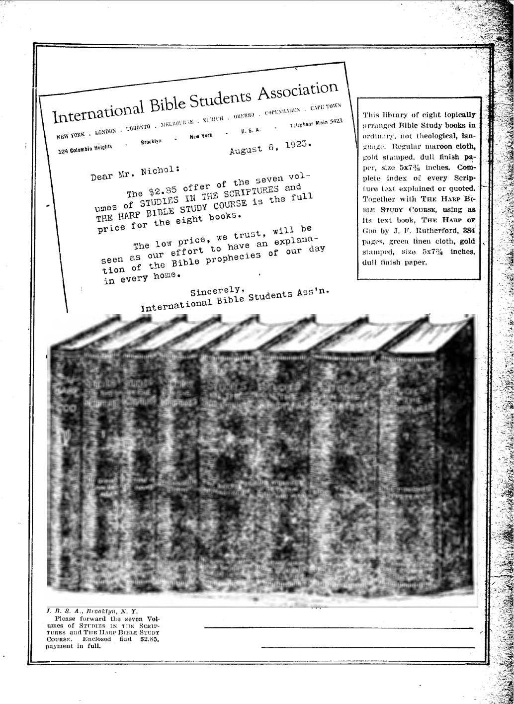

4
3
DESERTS ABOUT
TO BLOOM
AGRICULTURE
IN THE
BIBLE
CHINA AND HER PEOPLE
5$ a. copy — $1.00 a.Ye ar
Canada,and Foreign Countries $ 150
OLD VORLD DYING
Vol. IV Bi-Weekl>
September 12, 19.
NEV "VORLD BEGINNING
Finance—Commerce—Transbortatton
The Eighty Percent Co-Insurance Clause
Political—Domestic and Foreign
The Un-American Department of Justice
Confucianism Docs Not Med Demands
Buddhism a Grafting Religion ......
Chinese Religion in Comparison
Christian Nations versus Christ
Chinese Awakening to “Christendom's” Misconduct
Reports from Foreign Correstom'i- xtn
Agriculture and Husbandry
Religion and Philosophy
Published every other Wednesday at 18 Concord Street. Brooklyn, N. Y., U. S. A., by WQODWOBTIL HUDGINGS & MARTIN
Copartners and Proprietors Address: 18 Concord Street, Brooklyn, A’. U.S.A. CLAYTON J. WOODWORTH . . . Editor ROBERT .1- MARTIN . Business Manager <?. E. STEWART .... Assistant Editor WM. F. HUDGINGS . . Sec’y and Treas. Five Cents a Copy—$1.00 a Year Make Remittances to THB GOLDEN AGE Foreign Offices : British.....34 Craven Terrace, Lancaster Gate, London W. 2
Canadian........ 270 Dundas Street W., Toronto, Ontario
AustrataMan....... 495 Collins Street, Melbourne, Australia
South African ...... 6 Lolie Street, Cape Town, South Africa
Entered as second-class matter at Brooklyn, N. Y., under the Act of March 3, 1879
Volume IV Brooklyn, N. Y.t Wednesday, September 12, 1923 Number 104
- ■ , . .. — . - - , ,, --- ^^===38
Agriculture in. the Bible
WITH the exception of sea food, everything that we eat comes from the farm. Whether we are clothed in cotton, wool, linen or silk, the fibers of which the garments are made come from the farm. Man was made to participate in and to enjoy agriculture. It was his first occupation. When the Lord had created the first man, He “took the man, and put him into the garden of Eden to dress it and to keep it?’ —Genesis 2:15.
After the expulsion from the Edenic home, agriculture in some form became a matter of life or death. The outcasts were familiar with fire. They know how to roast a lamb, and probably how to ,cook vegetables. We read of the first two boys that were born into the world that “'Abel was a keeper of sheep, but Cain was a tiller of the ground.”—Genesis 4: 2.
After Cain had slain his brother, he was warned that a measure of the blessing which had hitherto attended his efforts would be withdrawn. The Lord said to him: “What hast thou done? The voice of thy brother’s blood crieth unto me from the ground. And now art thou cursed from the earth, which hath opened her mouth to receive thy brother’s blood from thy hand: when thou tillest the ground, it shall not henceforth yield unto thee her strength.” —Genesis 4:10-12.
When Noah and his family emerged from the ark they resumed their former occupations, as a matter of course; and because it was the occupation of his youth, and because there would not be need for any more arks, we read that “Noah began to be an husbandman.” (Genesis 9: 20) He began to cultivate the earth for the benefit of his family, and to husband its crops so that his loved ones would have food in the unproductive months of winter.
HERE is a general impression that the earth belongs to the human family, and that some of them have a more definite title to certain parcels of it than have others; but the Scriptural proijosition is that “the earth is the Lord’s.” (Exodus 9: 29) Pharaoh had to learn this fact by a severe experience. Moses expressly told him that the plague of the hail, with the consequent damage to the early crops of flax and barley, was to teach him just that lesson.
The Jews were an agricultural people. They were allowed the use of-the Lord’s land during good behavior and during the Lord’s pleasure; but they were made to know that they could not dispose of it in perpetuity. Thus' their law read: “The land shall not be sold for ever: for the land is mine.”—Leviticus 25: 23.
The Lord declares that the absorption of His land into large estates is contrary to His wishes, and will receive due punishment. The principal offenders in this regard have been the nobility in all ages and the Catholic Church which, in some sections of the world, has at times owned as much as a third of such great countries as France, Poland, and Mexico. The scripture reads: “Woe unto them that join house to house, that lay field to field, till 'there be no place [for others] that they may be placed alone in the midst of the earth!”— Isaiah 5:8.
The thought that the Lord is the owner and the Jews were His people, his tenants, is kept to the fore in the tithing system, in the law requiring the land to rest one year in seven, and in the Jubilee arrangements, concerning which more hereafter. If His people were obedient the Lord gave them bounteous crops. If they were disobedient He undertook to bring them back to Him by disciplinary measures described by the prophet Amos:
Til
“I also have given you cleanness of teeth in all yoin* cities, and want of bread in all your places: yet have ye not returned unto me, saith the Lord. And also I have withholden the rain from you, when there were yet three months to the harvest: and I caused it to rain upon one city, and caused it not to rain upon another city: one piece was rained upon, and the piece .whereupon it rained not withered. So two or three cities wandered unto one city, to drink water; but they were not satisfied: yet have ye not returned unto me, saith the Lord. I have smitten you with blasting and mildew: when your gardens and your vineyards, and your fig trees, and your olive trees increased, the pahnerworm devoured them: yet have ye not returned unto me, saith the Lord?’—Amos 4: 6-9.
In the second verse of the preceding chapter the Lord, by the mouth of the same prophet, informed the Jews that this favorable arrangement was made with no other people, saying, “You only have I known of all the families of the earth: therefore will I punish you for all your iniquities.”
But while the Lord recognizes Himself as the owner and the people as His tenants, yet one tenant must not trespass upon the rights of another. The commandment was: “Thou shalt not remove thy neighbor’s landmark, which they of old time have set in thine inheritance” (Deuteronomy 19:14), and a curse was pronounced upon the one that did so. Yet the prophet Job tells us that there were some in his day who violated this command.
HE fields of ancient times were fertilized by the method in general use to this day.
We know this from the prophecy concerning the wicked queen Jezebel that “the carcase of Jezebel shall be as dung upon the face of the field” (2 Kings 9:37), as well as from Jeremiah’s prophecy that "the carcases of men shall fall as dung upon the open field?’—Jer. 9: 22.
Modern scientific farming has proven that the dunghill is the farmer’s wastebasket, the place where he throws away his profits. The right way, the way that pays, is to transport the manure to a fresh place on the farm each day as it is made, yet the dunghill is a feature of most farms today as it was in days of old. The Lord said of salt that has become tasteless that “it is neither fit for the land nor yet for the dunghill.” (Luke 14: 35) The prophet Isaiah alludes to a practice still in vogue among fanners of our time when he prophesied that “Moab shall be trodden down under him, even as straw is trodden down for the dunghill.”—Isa. 25:10.
The prophets Jeremiah and Hosea each came to the Jews with the message, “Break up your fallow ground.” (Jeremiah 4:3; Hosea 10:12) 'Hosea adds: “For it is time to seek the Lord?’ Fallow ground is that which has lain idle for a year or more and has become hardened, difficult to plow.
The plows of ancient times were not greatly dissimilar from those of today. They had one handle, instead of two, and only two metal parts, the plow point or share and the coulter or sod-cutter. There is a very interesting passage regarding agricultural implements in 1 Samuel 13:19-21:
"Now there was no smith found throughout &U the land of Israel: for the Philistines said, Lest the Hebrews make them, swords or spears: but all the Israelites went down to the Philistines, to sharpen every man his share, and his coulter, and his axe, and his mattock. Yet they had a file for the mattocks, and for the coulters, and for the forks, and for the axes, and to sharpen the [ox] goads.”
The favorite method of plowing in Bible times was with oxen. When the calamities came upon Job, “the oxen were plowing, and the asses feeding beside them.” (Job 1:14) Oxen and asses could not be yoked together to the same plow because so unequal in strength and tread. (Deuteronomy 22:10) Some of the farms were large and had many oxen and many plowmen, or else it was customary for several neighbors to join together in plowing operations; for we read of Elisha that at the time when Elijah cast his mantle upon him he “was plowing with twelve yoke of oxen before him, and he with the twelfth?7—1 Kings 19:19.
The thought that several neighbors joined together in plowing operations is borne out by the query of the Prophet, “Doth the plowman plow all day to sow?” (Isaiah 28:24) It has been found in dry countries that it is best to sow the seed as quickly as possible after plowing, so that the seed may quickly benefit by the moisture which is turned up. Apparently, when working alone, a farmer would need to plow for a time and then sow for a time; otherwise the soil would become too dry to be profitably sown. But by several farmers working together the seed could be sown as the plowing progressed.
Before the seed was sown the soil was pulverized by some method, as we gather from the prophecy that “Judah shall plow, and Jacob shall break his clods?’—Hosea 10:11.
The Jews were forbidden to sow their fields with mingled seed. (Leviticus 19:19) Apparently they could not even plant different varieties of grapes next to one another in the same vineyard. The reason is given. “Thou shalt not sow thy vineyard with divers seeds: lest the fruit of thy seed which thou hast sown, and the fruit of thy vineyard, be defiled.” (Deuteronomy 22: 9) Oxen and asses were used to tread the seed into the ground after it had been sown. —Isaiah 32: 20.
THERE are no hay barns in the East at this frnie. In hot countries the grass withers quickly, and its preservation in the form of hay is not so common as with us. Nevertheless, there are indications that hay was a more or less staple crop. The prophet Amos speaks of “the latter growth after the king's mowings” (Amos 7:1); the Psalmist says of the wicked that “they shall soon be cut down like the grass” (Psalm 37:2), and of the coming of earth’s King that He shall come, not as we once thought, bearing destruction and devastation, but “'shall come down like rain upon the mown grass.” (Psalm 72: 6) One use of hay common in our Lord’s time was the heating of ovens; this was necessary on account of the lack of wood throughout Palestine. This is one of the thoughts back of our Lord’s question and its implied answer: “If God so clothe the grass of the field, which today is, and tomorrow is cast into the' oven, shall he not much more clothe you, 0 ye of little faith?”—Matthew 6:30.
We know that there were straw and provender for the beasts. This provision for their needs is three times referred to. When Eliezer came to Mesopotamia seeking a bride for Isaac, and when Rebecca met him at the well, she invited him to stay at her home, saying, “We have both straw and provender enough, and room to lodge in.” (Genesis 24:25) We have the account also of a Levite traveling from Bethlehemjudah to Mount Ephraim and taking with him straw and provender for his beasts of burden.—-Judges 19:19.
Although the Jews seemed not to have hay barns, yet they had other barns, or storehouses. The prophet Joel, urging Israel to repentance, reminds them that “the garners are laid desolate, the barns are broken down” (Joel 1:17), thus seeming to distinguish between granaries and other farm buildings. The Lord referred to barns several times. He reminded His followers that the fowls of the air “sow not, neither do they reap, nor gather into barns; yet your heavenly Father feedeth them.”—Matthew i 6:26. 1
In the parable of the wheat and the tares, the conclusion of the matter was, “Let both grow together until the harvest: and in the time of harvest I will say to the reapers, Gather ye together first the tares, and bind them in bundles to burn them: but gather the wheat into my barn.”—Matthew 13: 30.
In another of our Lord’s parables He spoke of a certain rich man who thought within himself, “What shall [ do, because I have no room where to bestow my fruits? And he said, This will 1 do: L will pull down my barns, and build greater; and there will I bestow all my fruits and my goods. And I will say to my soul, Soul, z thou hast much goods laid up for many years; take thine ease, eat, drink, and be merry. But God said unto him, Thou fool, this night thy soul shall be required of thee: then whose shail those things be, which thou hast provided? So is he that layeth up treasure for himself, and is not rich toward God.”—Luke 12:17-21.
Wo find the stall of the ox and the ass referred to by the Lord (Luke 13:15), and it was in just such a stall that the Lord himself was born. The inns of Eastern countries have stalls for camels and other livestock in the central courtyard. In these the poorer travelers may unpack their animals and take up their lodging, when either by want of room or want of means they are excluded from the inn itself.
TT1IIE British people use the word “corn” to -L describe all kinds of grains similar to wheat, including wheat itself; and thus the American reader of the Authorized Version of the Bible occasionally gets a wrong thought. Wheat, not corn in the American sense of the term, has been in all ages the staple food of man. Man is composed of seventeen elements. All of these are found in wheat as the Lord makes it, but nine of these elements are missing from white flour, and this explains much of the sickness in the world. The best part of the wheat is generally fed to the livestock.
The seven-eared corn which Pharaoh saw in his dream was a seven-eared wheat which is still raised in Egypt; and even before the Israelites moved out of Mesopotamia we have a reference to the "days of wheat harvest” (Genesis 30:14), showing that from earliest times Mesopotamia was, as it is now, a prolific producer of this standard cereal.
When Moses was describing the good land toward which God was leading Israel he described it in part as “a land of wheat.” (Deuteronomy 8: 8) Not only was wheat raised in large quantities to enable the Israelites at one time to export twenty thousand measures of wheat to Tyre, as occurred in the days of Solomon (2 Chronicles 2:10), but their neighbors raised large quantities of it also, as is shown by the annual payment of tribute by the Ammonites to Israel some four hundred years later, one of the Items of which was ten thousand measures of wheat. (2 Chronicles 27:5) Wheat is still an important product of the country once inhabited by the Ammonites. Job speaks of thistles growing instead of wheat and cockle instead of barley. (Job 31:40) The farmers have always had their troubles.
Barley was raised in about the same quantity as wheat, if we may judge from the scriptures above cited, where, in each instance, there was the same quantity of barley as of wheat. Barley ripened a month earlier than wheat, and as oats are not raised in hot countries barley was the staple food for horses and camels, as we find from the provisions made for Solomon’s stables. (1 Kings 4:28) Barley was a food of the’poor; the five loaves with which the Lord fed the five thousand people were barley loaves. (John 6:9) The bread of the poor was sometimes a mixture of various grains, like the war bread of 1918.
There were six ingredients in Ezekiel’s bread. (Ezekiel 4:9) There were wheat and barley; millet, which is much the same as our sorghum or broom com; fitches, the same as tares, and somewhat similar to our beans or peas; len
tils, another food somewhat similar to peas or beans; and then there were beans themselves, Fitches are black in color, aromatic in flavor,, and are used in the East as a medicine and condiment. '
The Gardens of Antiquity
EBY evidently there were garden plots in Palestine as early as the days of Jacob;
for we find him sending down into Egypt a present for the Egyptian ruler containing balm, honey, spices, myrrh, nuts and almonds, all choice and useful garden products that would keep through the winter.—-Genesis 43:11. . Most certainly there were gardens in Egypt; for when wandering through the wilderness, Israel bemoaned the loss of the cucumbers, melons, leeks, onions and garlic,’ which they had had there in such abundance, and which still grow there, large in size and excellent in ' quality.—Numbers 11: 5.
One of the tragedies of the bloody history of the ten-tribe nation of Israel was King Ahab’s i desire for a garden of herbs. He desired Naboth's vineyard, not for vineyard purposes but < because it was near by the royal palace and would make an ideal vegetable garden. Bead the whole interesting story in 1 Kings 21:1-24 ’■ and the sequel in. 1 Kings 22:30-38; 2 Kings I 9:30-37; 10:1-11. N
Isaiah’s mention of “a lodge in a garden of “ cucumbers” (Isaiah 1:8) is a reference to an > ancient custom of protecting growing crops -from night marauders by the gardener’s sleeping upon the premises. Cummin, mentioned by J the same prophet (Isaiah 28:27), is somewhat I similar to peas or beans. • ;
While Israel were in captivity during the J seventy years desolation of the land they were to “plant gardens and eat the fruit of them” (Jeremiah 29: 5): and after the long period of captivity should bo over, their children were ? promised that in the old homeland they should again “make gardens and eat the fruit of them.” —Amos 9:14. -
Vineyards in the Hills
HE earliest vineyard of history is that planted by Noah. (Genesis 9:20) There were doubtless vineyards in Egypt; for Pharaoh had his butler who “took the grapes and . : pressed them into Pharaoh’s cup.” (Genesis 40:11) There are grapes in California the bunches of which are not less than two feet in length, but even these bunches were surpassed in size by the grapes brought back from Eschol by the twelve spies. In the latter instance it required two men to comfortably carry one cluster. (Numbers 13:23) Travelers report vines in Palestine eighteen inches in diameter at the base.
Much of the tillable land of Palestine which could not be used for other purposes was used for vineyards. Hence we read of the mountains dropping sweet wine (Amos .9:13), and of the planting of vines on the mountains of Samaria. (Jeremiah 31:5) In a parable the prophet Isaiah sets forth the routine regarding the planting and care of a vineyard:
“My well beloved hath a vineyard in a very fruitful hill: and he made a wall about it, and gathered out the stones thereof, and planted it with tho choicest vine, and built a tower in the midst of it, and also made a winepress therein.”—Tsaiah 5:1, 2.
Probably with this parable in mind Jesus uttered another parable quite similar in language :
‘"‘There was a certain householder, which planted a vineyard, and hedged it round about, and digged a winepress in it, and built a tower, and let it out to husbandmen.”—Matthew 21: 33.
The hedges or walls were to keep out the wild boars and foxes, as we see from the remarks in Psalm 80:13 and Canticles 2:15. If vineyards were adjacent to each other there was evidently a separate wall or hedge entirely about each, with a space between for a path. It was in such a place, so narrow between the two walls that there was no way to turn either to the right hand or to the left, that the angel of the Lord met Balaam when he was on his way to curse Israel at the request of Balak, king of Moab. (Numbers 22: 24-27) The towers enabled the keepers to watch over the vines at night. Vineyards not looked after soon grew up to thorns and nettles. (Proverbs 24: 30, 31) It was not unusual for a vineyard to be let out to keepers who worked it for the owner on shares.—Canticles 8:11; 1 Kings 21:2; Matthew 21:34.
Palestine has always been famous for its olives, from the time of Moses even until now. Pomegranates and figs were also raised on a large scale. (Deuteronomy 8:8) The Jews of St. PauFs day understood grafting, as is plain from his parable of the wild olive branches grafted into the good olive tree. (Romans 11: 17) The method of tree culture adopted in our Lord's time, and still in use in Palestine, is ta dig about the tree and bury humus in the holes. (Luke 13:8) Solomon exported 20,000 baths of oil to Tyre with a like quantity of wine.— 2 Chronicles 2:10.
THH Mosaic law regarding ripened crops plainly shows the divine authorship. These laws would be considered a marvel of benevolence if in force today. They have been superseded by a system of caring for the poor through taxation; but there is a serious question whether the Mosaic method was not better after all, as it brought the benefactor into more intimate personal touch with the needy. We quote several of the laws:
“When thou comest into thy neighbor’s vineyard, then thou mayest eat grapes thy fill at thine own pleasure; but thou shalt not put any in thy vessel. When thou comest into the standing com [wheat] of thy neighbor, then thou mayest pluck the ears with thy hand: but thou shalt not move a sickle unto thy neighbor's standing corn.”—Deuteronomy 23: 24, 25.
“And when ye reap the harvest of your land, thou shalt not wholly reap the corners of thy field, Neither shalt thou gather the gleanings of thy harvest. -And thou shalt not glean thy vineyard, neither shalt thou gather every grape of thy vineyard; thou shalt leave them for the poor and stranger.”—Leviticus 19:9,10.
“When thou cuttest down thine harvest in thy field, and hast forgot a sheaf in the field, thou shalt not go again to fetch it: it shall be for the stranger, for the fatherless, and for the widow; that the Lord thy God may bless thee in all the work of thine hands. When thou boatest thine olive tree, thou shalt not go over the boughs again: it shall be for the stranger, for the fatherless, and for the widow. When thou gatherest the grapes of thy vineyard, thou shalt not glean it afterward : it shall be for the stranger, for the fatherless and for the widow'.”—Deuteronomy 24:19-21. |
How these laws worked out in practice we can see from the experiences of Ruth, the widow of Mahlon. When she came into the field of Boaz to* glean behind the reapers, “Boaz commanded his young men, saying, Let her glean even among the sheaves, and reproach her not: and let fall also some of the handfuls of purpose for her, and leave them, that she may glean them, and rebuke her not/'—Ruth 2:15,16.
Job makes his complaint of the wicked man who disregarded these benevolent laws and who instead of assisting such a needy one would * “take away the sheaf from the hungry” (Job 24:10); i. e.} would not allow him to retain the sheaf which he might have gleaned from the harvested field.
That the letting fall of handfuls of grain for the benefit of the poor was a custom widely observed in Israel we may judge from Jeremiah's reference to it where he says: “The carcases of men shall fall as dung upon the open field, and as the handful after the harvestman, and none shall gather them.”—-Jer. 9:22.
We know from the foregoing that the instrument of harvest was the sickle, and that the harvested grain was bound in sheaves. In Joseph’s dream he saw himself and his brothers binding sheaves in the field; his own sheaf arose and stood upright and the eleven sheaves of his brothers made obeisance to his sheaf. (Genesis 37:7) The sheaves were carried to the threshing floor in a cart; for the prophet Amos speaks of the way in which “a cart is pressed that is full of sheaves.” (Amos 2:13) Apparently the stalks were cut but a short distance below the head; for the prophet Job speaks of the wicked as being “cut off as the tops of the ears of corn [wheat].”—Job 24:24.
Our Lord makes several references to the fact that in Mis days it was customary for the husbandman to employ reapers and to pay them wages. When Boaz came into his field his greeting to his reapers was: “The Lord be with you”; and their reply to him was: “The Lord bless thee.” ("Ruth 2:4) We can but ’wonder in how many harvest fields in this “Christian” land such greetings are common between farm owners and farm laborers.
THE threshingplace of Araunah the Jcbus-ite,” referred to in 2 Samuel 24:16 and described as a “threshingfloor” in the eighteenth verse of the same chapter, was a level place which had become quite, hard through constant use for threshing purposes. Sometimes this word is translated “barn” in our common version, but it was not a covered place nor a structure in any sense. Various means were used on the threshing-floor for loosening the grain from the stalk. There was the ox that was not to be muzzled when engaged in this task (Deuteronomy 25:4); there was the “heifer that is taught, and loveth to tread out the corn [wheat]” (Hosea 10:11); and Isaiah mentioned three threshing devices in one verse. ” The verse reads: “The fitches are not threshed with a threshing instrument, neither is a cart . wheel turned about upon the cummin; but the fitches are beaten out with a staff, and the cummin with a rod.”—Isaiah 28: 27.
On the threshing-floor of Araunah (Ornan) there were threshing instruments of wood. (1 Chronicles 21:23) Isaiah speaks of a new sharp threshing instrument having teeth (Isaiah 41: 15), and Amos speaks of threshing instruments of iron. (Amos 1:3) We have no knowledge of how these were made. >
Today the modern thresher does all the work of threshing, winnowing, sifting and bagging the wheat, as well as stacking the straw; but there are men now living who can remember when the threshing was done with a wooden flail, still found in some barns. The winnowing was done with a fanning mill turned by hand, and the sifting was done by hand.
The farmer of Bible times did his winnowing only when there was a wind strong enough to blow away the chaff as he tossed his grain into the air; or else he created the air current with a fan. Job speaks of the “stubble before the wind” and the “chaff that the storm carrieth away.” (Job 21:18) The Psalmist speaks of the “chaff before the wind” (Psalm 35:5) Jeremiah speaks of a dry wind from the wilderness that would be “not to fan, nor to cleanse” (Jeremiah 4:11) because not sufficiently strong for the purpose. The wind sufficient for winnowing ' purposes came up generally in the evening; hence the statement respecting Boaz that “he winnowoth barley tonight in the threshing-floor.”—Ruth 3:2.
Isaiah speaks of “clean provender, which' hath been winnowed with the shovel and with the fan” (Isaiah 30: 24); and John the Baptist speaking of our Lord as the harvester of the Jewish age, said of him that his “fan is in his hand, and he will thoroughly purge his floor, and gather his wheat into the garner; but he will bum up the chaff with unquenchable fire.” (Matthew 3:12) We have the picture here of the use of a fan instead of a natural wind, -■> Probably one worker tossed the grain lightly in his shovel while another wielded the fan. The last operation was the sifting through a sieve mentioned by the Prophet.—-Amos 9: 9.
The farmers of olden time did not take any chances with their crops. Although it is stated of Boaz that he was a wealthy man, yet while his winnowing of barley was under way he took the precaution, to sleep on the threshing-floor at the end of the heap of barley that had been winnowed.—Ruth 3: 7.
NOT because it would be of any benefit to Him but because it would be of incalculable benefit to them the Lord impressed upon the Jews that He was the real owner of the land and that they were His people, His tenants, working with Him and for Him, despite the fact that most of the produce went to the people themselves.
The first sheaf of the harvest, the firstfruits as it was called, was to be presented to the Lord before the people themselves could participate in the new harvest at all. This “sheaf of the firstfruits” (Leviticus 23:10) represented the Lord Jesus at the time of His resurrection, when He became the firstfruits of them that slept.
After the ingathering of the firstfruits the Jews were to wait fifty days, when two wave loaves of fine flour baked with leaven were to be offered as additional firstfruits to the Lord.
These two loaves, the prospective “little flock” and “great company,” were set apart to the Lord fifty days after His resurrection, on the Day of Pentecost. 'There they became a kind of firstfruits, the leavened kind, leaven representing imperfection.
Once every three years the Jews were to give a tenth of all their crops to the Lord. (Deuteronomy 14:28) This giving of one-thirtieth of their incomes to the Lord was a small burden for them to bear, and made but reasonable provision for the Levites who, nominally onetwelfth of the people, had no inheritance in the land.
The Lord was the most benevolent of employers. Three times in the year, at times that would not interfere with the planting or harvesting of crops, every male was compelled to take a vacation of one week and participate in a feast; many of the women attended these feasts also, which were held at Jerusalem. After six years of work there was a vacation of an entire year, the Lord covenanting that in the sixth year the land should bring forth double crops. And once in fifty years there was a vacation of two successive years, one of them styled the Jubilee year, when every man returned to his fathers original possessions. When this period came around the Lord covenanted that in this particular “sixth year” the land should bring forth crops for three years. ■—Leviticus 2a : 21.
THE Department of Justice comes in for some well-deserved criticisms in a speech delivered in the House of Representatives by Hon. George Huddleston of Alabama. We give extracts from it because Air. Huddleston is one of the few lingering survivors of true Americanism, the kind that believes in freedom of speech and resents bitterly the domination of this government by the Wall Street anarchists who are trying to destroy every vestige of liberty in this land.
“It seems to me that those who believe it is right for men to be put into jail for expressing their opinions need to go back and read the first amendment to the Constitution, before they begin to pose as super-Americans and patriots. This is a time of peace. Men ought not now be in jail merely because they did not agree with the majority during the war.
“Some of the superpatriots of this country, some of the ‘unco guidd were themselves guilty of excesses during the war. There were many of them who took occasion to rob our Government and profiteer on our people during that time of distress. Let us prosecute them and put them into the penitentiary, and not confina ourselves me rely to prosecuting men who did not happen to think we had sufficient cause to go to war or that we ought not to have passed certain harsh and oppressive laws in connection with carrying on the war.
“No, Mr. Speaker, the very ones who are most bitter and vituperative against those who expressed their opinions of dissent from the majority are the chiefest defenders of the Attorney General who has failed to prosecute the grafting war contractors.
“Here are about sixty cases of men who are still in prison, not for spying, not for disloyalty, not fox- aiding the enemy, but for expressing opinions against war or conscription or otherwise dissenting from the majority. ... As a citizen who loves the fair name of his country I demand that their prison doors be opened. It cannot be said that they took any active part against our Gov-
eminent, that they did anything more than simply to say something which tended to obstruct conscription or to question the motives or conduct of some of those in authority.
“I like to think of America as a land of free men— of liberty of conscience and opinion. I would rescue her from the stigma of holding men in prison four long years after the war merely for the utterance of a few ill-considered words.
“It is also a fact that of all the nations of the world the United States is the only nation which yet holds in prison offenders convicted under the war laws. I know
of no better name for these persons than ‘political prisoners/ because that is exactly what they are. Their offenses were not against persons but directly against the Government by opposing measures relating to carry
ing on the war.
“I am impelled to discuss this subject because of the feeling that the situation is a disgrace to our country. I feel that it is a situation which demands the attention of Congress. I am disturbed by the thought that wc have too long been silent and that perhaps I myself have failed in my duty in not before demanding here upon this floor that these prisoners be released. . . . Whenever pardon for them is mentioned the department [of Justice] emits a smoke screen and attempts to divert attention from the true issue by reckless statements that the prisoners are ‘anarchists/ ‘communists/ or even murderers. It has tried to excuse itself with contemptible evasion and by blackening the names of these men by making unproven charges, by the use of epithets, and I would almost say making lying statements in regard to them. Once you mention the case of one of these men, back comes the propaganda that he is an 'anarchist/ an T. W. W./ a ‘communist/ or some other kind of political or economic heretic. Never will they deal with the facts of the particular offense for which he was convicted or with the proof as appears from the record of the trial of the case.
“The sinister effort to prejudice the public against these prisoners by making charges against them which have no connection with the offenses for which they were convicted is inspired by the consciousness of the slender basis for their conviction. In no case were they tried for disloyal or violent deeds. Always it was for the use of ‘words/ and in some cases the construction placed upon their words was so strained as to pass into 5S the realm of the ridiculous. Men were convicted of" conspiring with each other who were rank strangers,, had never met, and had never communicated; and when J the proven overt act consummating the conspiracy con- Jg sisted merely of spoken or written words.
“Necessarily, as in the case of all laws aimed at free speech, the espionage act convicted men for the intent ' $
or purpose with which they spoke, and in actuality they were tried before the bar of public opinion represented by juries. In such cases jurors, of course, * carry into the box the prejudices of the outside world . | and are left free to vent the feelings of the majority upon the dissenter. When public feeling is intense and practically unanimous, as in time of war, there is a demand that examples be made of any who may have been conspicuous in dissenting. Conviction is demanded whether there be actual guilt or not, and men are convicted upon their reputations and what others may £ believe about them. In such cases a trial is more or y,
less a farce. It is a sort of legalized mob action. The' y rich, influential, and ably defended, of course, go The weak, the undefended, and the friendless are convicted, of course. To be an alien radical or labor
agitator is to go to jail.
“The fact should be frankly and boldly recognized \ that certain influential groups in this country do not sincerely believe in free speech or other constitutional guaranties. As the beneficiaries of abuses of our system, these groups hold to valuable privileges, monopolies and the control of great aggregated wealth. They fear the exposure of their practices and the correction of the evils by which they have profited. Dominating to a large extent the channels of public information, twisting and coloring the news which the people receive, their security lies in the suppression of criticism. They identify themselves as the Government, because they are often permitted to control its activities. Then there are the militarists and imperialists, with their thoughts of unpopular future wars for which conscription will be necessary.
“Without any particular regard for the guilt of our political prisoners, these dominating groups would hold them in prison for its effect upon all who might desire to expose their practices, to thwart their aims, or to * question their right to dominate. It is out of deference * to these groups that the Department of Justice holds these men in prison. The department bows to the will of the masters of the present administration. Of all the vices which officials may have, hypocrisy is the^most --3 contemptible—the exercise of discretion for one feet of reasons while pretending to do so for other reasonsL This charge I lay at the door of the department.” J
“Less pleasure take brave minds in battle won Than in restoring such as are undone;
Tigers have courage and the rugged bear, , • - '■
But man alone can, whom he conquers, spare.**
THE religion of the Chinese is quite complex and variegated. To them their religion is as good as any, and yet not altogether satisfactory. We presume that the different brands cause perplexity among them, as the multitudinous brands of ‘'Christianity' cause anxiety among denominational adherents.
Their religion consists principally of moral ethics handed down from Confucius, who lived in the sixth century B. C.; also of ancestral worship. The religions of China are tainted with Buddhism. The Chinese in religion are divided as follows:
Confucianism, an ethical system founded by Confucius (Kong-Fu-Tse) about 550 B. C. uFu-Tse” means ‘‘reverend doctor.'' This may be termed a “state’5 religion. It is a plain ethical code of morals of practical character and entirely human, not spiritual.
Taoism, another ethical religion, founded by Lao-tsze about the same time. Originally it was a pure philosophy, but later copied the Buddha ceremonial. Here the deities are worshiped, and the high priest is “Master o’f Heaven/’ It holds tliat there is a life in some form after death.
Buddhism, a demon religion of superstition including the warding off and appeasing of evil spirits. It does not recognize any supreme being; anyone may be a priest. Buddha means “teacher.” It holds the doctrine of transmigration of souls, which means that a soul may be born over and over again through the process of birth, sin, suffering, and death until the evolutionary process is completed, when it is believed that the state of perfection is reached. It forbids to kill, to lie, to steal, to commit adultery, and to fall into drunkenness. The virtues striven for are charity, purity, patience, courage, and knowledge. It is a mild code of morals, abhorrent of cruelty. It is preposterous to imagine the images of Confucius and Buddha to be in the same shrine for worship.
Mohammedanism, a belief in one God only; that Mohammed is His prophet, superior to Christ; that the Koran is superior to all Bibles; that angels are ministering spirits; that there is to be a resurrection and judgment day; and that there is a form of predestination. As the Arabs are related to the Israelites, so their religion has many points in common with that of the Hebrews. As the Hebrews are looking for the coming of their Messiah, so the Mohammedans are looking for the coming of a greater prophet than Mohammed, whom they call Mahdi. There are about 10,000,000 Mohammedan Chinese, the greater part of whom live in the inland provinces of the West; and these are clearly marked off from other Chinese because they view their brethren of the Confucian faith with more or less disdain, for they have perverted the original form. In some localities where they are the strongest they are clamoring for a Mohammedan governor. The believers in Islam are becoming strong in North China. Sometimes there are serious uprisings among the Mohammedans of China, but these are not because of religious conflicts. About 300,000 Mohammedans met death in the province of Kansu in 1921, when a great earthquake shook all China.
Christianity was introduced by theNestorians. The Nestorians were a schism in the early church, and held to many things in common with true Christianity, and in many respects were purer in their doctrines than denominH.-tionalism of today. The Jesuits invaded China and, by subterfuge and loud swelling words aided by the devil, overcame the Nestorian Christianity and finally smothered it out. The Roman Catholics claim to have about 1,000,000 adherents among the Chinese, while the numerous Protestant sects claim for their following about 60,000. There is a “Chinese Mission So--ciety” in St. Colmnbans, Nebraska, which offers free scholarships to those who wish to become “Missionary Priests in China.” When later you read with astonishment that the Chinese are revolting against missionary efforts turn back to this paragraph and read it again.
The Mongolians are at a very much lower level than the Chinese, being largely nomads and sunk in superstition. The Tibetans are more fanatical than the Mongolians; hence their worship of Buddha is more grotesque and gloomy than that of Confucius. Buddhism is really foreign to the Chinese civilization.

LL religions are negative except the true Christian religion. The Confucian version of the Golden Rule is, “Do not,to others what you would not have them do to you.” Confucius was far ahead of the great Pagan philosophers in wisdom. For instance, Socrates said: “Do not call me wise. I am not a wise man; I am only a searcher after wisdom." But Confucius many years before had said: “Be not selfdeceived in wisdom; look further." Confucius was a practical man, a teacher of ethics which were concise and pointed; and he thought that by self-conscious direction one could arrive at proper action. Confucian ethics were exclusively social, the primary purpose of which was to establish order and harmony at home and elsewhere.
The education of the Chinese begins with the study of the “Four Classical Books" which contain the moral teaching of Confucius. These precepts embalm the essential principles of the Chinese civilization as it existed more than twenty centuries ago; and it has established ethical standards so perfectly meeting the wants of the Chinese people that they have until recently been considered final. The manuals of Confucius were the only books that escaped the universal destruction of literature ordered by the Emperor Hwang-ti about 221 B. C. Consequently, his writings have become practically the sole repository of China’s ancient wisdom, an oracle handed down from the venerable past.
Confucius said to his sovereign: ‘Tou are the head of a nation; you have a mission to fulfil; if you are not faithful to that mission, ‘resign, for you must be replaced by one better qualified.” He also said: “A sovereign should not reign except for the welfare of his j^eople. On the other hand, the people should obey their sovereign and regard him as their father and mother. Why should there be wars? ... A wise government will draw these nations willingly within the boundaries of your empire. Govern well and you will see the whole world eager to place itself under the protection of your just and beneficent rule. Burdensome taxes and bad laws are more cruel than tigers.”
He bade the members of each family to love one another: “Your parents have given you life. They have toiled and sacrificed to bring you up. You must aid them in their old age.”
Confucianism no longer meets the demands of the Chinese. When about ten years ago the empire crumbled and collapsed, the seriousness of China’s problem of political equilibrium
_____ LS
revealed itself by the chronic anarchy which since has ensued. With each province a feudal principality, and many of these seeking the mastery, the people naturally do not look to $ Confucianism as their salvation.
UDDIIA was born in India five or six hun- < dred years before Christ, but his fame did ;
him to send to India for priests of the new
religion he had heard of. A few years later,
Buddhist priests appeared on the scene palm-
ing themselves off as the priests of the most
high God, and started their propaganda. Some
If St. Paul had gone east, as he intended , doing, and had preached the truth in China, China might have been the “civilizer” of the world. Had an apostasy started in that early Chinese church and had its Christianity become ;
corrupted and divided into warring factions J
dominated by Satan, as is the case in the West today, this same Satanic military spirit would have possessed China; and today Britain, France, Germany and America having re- 3 mained heathen, we might even now be arous- A ing from our age-long slumber “Christianized” with the same brand which is now being forced -upon China. But the Lord spared China the “holy” wars and bloodshed of the “dark ages” by giving St. Paul a dream in which he heard the call, “'Come over into Macedonia and help < us”; and the Gospel went west instead of east.
In the apostles’ day the Gospel was pure and wholesome; but the devil got the leaven of error into the food in an early day and had it ■. pretty well corrupted by 325 A. D., when Constantine, the devil’s agent, gave the perverted ? “gospel” a boost. We are glad that we are liv- . ing now in a time when true light is shining forth and when error, superstition and priest- S craft are giving way to saner reasoning. The > distress and uncertainty in the world is the strongest evidence that the old order is passing. A
In one respect at least the Buddhist priests : resemble the pious beggars of America: They beg, ask alms, seek for bounty, and hornswog-gle those who put their trust in them.
In a number of places in China are palaces, temples, and other architecture quite ancient; in Sianfu there are tablets dating back to the Han dynasty—B. C. 206-A. D. 220.
The oldest record of the Christian church in China is said to be the Nestorian Stone, which describes the earliest mission, 635 A. D. It is said to be about thirty inches wide by one hundred twenty inches in length. It was discovered under an old wall in Sian by a Jesuit priest in 1625, and a temple was built over it. The Mohammedans destroyed the temple in 1862, but spared the tablet because of the cross at the top of the Syriac inscriptions. It is now preserved in a Confucian temple. Perhaps we give more reverence to some of these old tablets than we should. The Lord is about to uncover the hidden treasures of the brilliant minds of the past by bringing them back from the dead; and instead of their writings we shall have their voices, their hearty handshakes, and their throbbing hearts among the children of men. Many men will be ashamed of fheir tombstones in the resurrection, because of the false impressions left of their goodness. But the worst of men have been loved; they have had mothers and wives and sweethearts and confidants. What a happy day that wall be when all the dead shall have been raised from the grave and given a heart and mind to know God, with the privilege of coming into harmony with Him! This will be not only for the White race, but for the Yellow, the Black, the Brown, the Red.
HE Chinese are proud of their religions and of their moral ethics. To be sure, they recognize that something is wrong, just as pseudoChristians wonder what is the matter with their religion; but they contend that any attempt to “Christianize” China is in vain so long as Christianity is not presented to them in a form which will bear the closest scrutiny.
The West cannot fool the East in this respect; for the East knows that the West is not living up to its Book. For thirty years they have known this! The Chinese fail to see where a religion having a hypocritical profession is better than their own, and -wonder what the reward will be if they allow their millions to be tossed about in the turmoil of hundreds of conflicting creeds. They think that it wTould be -■wise for “Christians” to refashion their attitude, purify their convictions, and get back to the Bible. ‘
Christianity is not wholly a White man’s re- 4 ligion. When this is understood, the labels will come off, and Christianity wTill come under the . pure food laws of the kingdom of the Lord ' Jesus Christ. Jesus Christ by the grace of God tasted death for every man, a ransom for all; but it was never His purpose to save any except the few self-sacrificing saints until the time of His second presence. When Christ sets up His Messianic kingdom in the world, the Chinese will bo well taken care of without the aid of ■ missionaries. The Chinese are wise enough to see that the so-called Christian does not believe J his own Book. -
Chinese opposition to churchianity is to be expected; for the “church” cannot meet the de- ‘ niands of the Chinese. The false cYeeds have i rendered denominationalism unchangeable, in- * flexible. St. Paul said that he was all things to all men to win them to Christ. True Christian- 1 ity can enter into the Chinese life; the only <
thing necessary is the right seed falling into the soil of the heart; it will sprout and grow .in any ' heart, but it must be the virile seed of the love ■ of God. Churchianity, pompously posing as Christian, is looked upon by the Chinese as a '
foreign institution; and the people of the -
United States and elsewhere would do well to ■ copy the heathen Chinese in this respect.
The Chinese say that the foreign business men (called Christians) -whose gain comes from > the sale of liquor, tobacco, and opium, feel very kindly toward most “Christian” work in China; for it is the means used to keep her people in -ignorance and poverty. However, those whose - -profit comes from the exploitation of cheap . labor in China see little benefit to the Chinese in the educational and uplifting work the missionaries are supposed to do; for the more : ignorant and debased man is, the more easy it is to exploit him. '
Of course, there are a few noble-souled missionaries whose work results in a higher stand- T-ard of living. These are conscientious; and though misguided doctrinally they are doing their best to bring happiness and purity to the • J people who have not embraced Christianity.
We believe that there are true Christians in China as in other countries. Some believe in the virgin birth of Jesus, the atonement of Christ, the inspiration of the Scriptures, and that Jehovah is over all. These have fought the attacks of the evolutionist; for believing the Bible their hearts have been changed by the message of “Jesus Christ and him crucified.'’ These Chinese Christians can themselves claim the honors in this battle for truth and righteousness. Their opponents, the introducers of higher criticism and evolution into China, have been the modernists amongst the missionary forces. Shame on the hypocrites who profess to love God and who teach Christianity and seek soft snaps in the missionary field when they know that their hearts have never been touched with the grace of the goodness of God 1
THERE are three important items emphasized in Christianizing the Chinese, according to the opinions of some: They should give up their idols, unbind their feet, and quit working on Sundays. When Americans quit worshiping their idols of gold and silver and stop desecrating Sunday in thousands of ways, we may expect the Chinese to take kindly to our civilization; for they are good imitators.
But civilization has its drawbacks. Insanity is constantly on the increase; tens of thousands of insane are in our state institutions; all hospitals are full and some even crowded. New York State has 40,000 confined in asylums, which is 6,000 more than they were built to accommodate. In all China’s 400,000,000 population there is but one hospital for the insane. Only the more violently insane are confined; the harmlessly insane are allowed freedom. Sometimes a family will chain their violently insane to a post. One woman is said to have been so chained for twelve years. The one hospital has but 600 inmates. One reason why the few insane of China are not better taken care of is that the Chinese believe that an insane person is obsessed of the devil and therefore incurable. Practically none are insane from alcoholic liquors; some women are insane from jealousy; and some from ill-treatment in the home.
Quietness and peace seem to be conducive to sanity. What a wonderful world this would be if all friction and unnecessary noises could be dispensed with and peace and happiness fill the. hearts of all! Tins is the very condition which 2 shall obtain under the beneficent reign of the Prince of Peace in the kingdom of God on earth.
LET no church-enshrouded enthusiast of the
Christian community beguile himself into ■> the belief that the heathen or the Mohammedan r is consciously thirsting for the Gospel. How could he when he sees the drinking, gambling, profanity, vulgarity, and immorality of the <. White races ? When these things are witnessed , the only logical conclusion he could have is that it represents the average of Christianity; so he draws his odious comparisons, and lives t on in the belief that his own religion is as good and probably better than that of others. "What an evil influence has been cast over the nations " by labeling any nation “Christian” and claiming . -that every individual of that nation is a Chris- * tian. The idea that one to be saved must neces- . sarily be a “church” member has done the damage. The bars of decency have been let down * to save the world; and look at us! What a great revelation there will be when the Lord ? separates the sheep from the goats!
That “Christianity” has gained some foot- <
hold is not denied; but not being reasoned out ;
and accepted intelligently its hold is attributed /s to the operation, of forces from without. Missionaries go prepared to teach the sciences, ~ political economy, mechanics, hygiene, medi- ; cine, etc.; but before they allow any to escape ; they compel the pupil to imbibe their concep- * tions of the Christian faith, and count them 1 converts.
One holiday season a traveler saw a vast J; crowd going around shouting with laughter, with comic spirit. In the largest, gayest, and most crowded temple, in the inmost court, he found the Salvation Army singing hymns to a . brass band and preaching through an interpreter, assuring the holiday crowd that its amusements were idolatrous and must infalli- -bly bring them eternal damnation! The crowd * enjoyed this immensely, laughed vociferously, ’ and applauded with good humor. The traveler did not think that the Chinese thought the Sal- . vationists were in earnest; for if they had, the ,.' good manners which are never deficient in any class of China would have demanded a different program. When the Salvation Army awaken to the truth of God’s Word, and see that they were blaspheming the God of love and doing their best to spoil the merriment of those innocent people in their own building, how ashamed they will surely be! The traveler adds: “I alone was left somewhat pensive, reflecting upon the benefits of the civilization we are bringing to the poor, benighted heathen.”
Better by far let them alone.
China’s peril is churchianity. A very sharp distinction should be made between Christianity and that which passes for'it. Christianity is a name which should apply only to the moral and spiritual ethics, principles and doctrines of Jesus Christ. A person who goes to church in order to have his neighbors think well of him is not a Christian; he is a churchman, he belongs to “churchianity.” A person who has heard of Christ, and who believes that such a man existed and that he was the best man who ever lived upon the earth, is not a Christian; for an infidel could and should do as much. Then, when prominent Chinese point out that Christianity menaces them, it is not the true to which they refer, but that which passes for it—a rank and blasphemous counterfeit.
Lowe Chuan-hwa, writing in The Nation of February 7, 1923, brings a terrible indictment against what he calls Christianity, and against the practices of the missionaries. He starts his arraignment by calling attention to the fact that millions in money and armies of missionaries are employed to proselytize the Orientals while in the “Christian” nations of America "and Europe unbelief is rapidly spreading, and those who pass for Christians are descending into Mammon-serving, pleasure-loving, immoral people. Such a “Christianity” that is morally ineffective, and philosophically unsound, cannot hope to find a permanent home in China.
HERE is no question but that the multiplicity of labor-saving machinery is playing its part in the awakening of drowsy China. Another factor is the friendliness of the United States government, which has made China wonder as she has beheld the marvelous things that have found their way from here. 2\merica, outwardly at least, has befriended China at peace conferences, and otherwise has undertaken to have China treated fairly. If some portions of the world have shown aip inclination to eat China blood raw, it has been impressed upon her that one section of the White race will not desert her. Young China has been educated principally in America; and under the influence of our civilization they have carried these ideals and customs to their homeland, and with it the desire for a better means of written communication. They are using a written language which can be translated more easily so that some of the educational books here can be printed for the benefit of the Chinese, and these . books are being printed in the simpler alphabet which the younger generation is helping to spread. As a result the little old red schoolhouse will have an inning in China. ’
With numbers of English-speaking peoples going to China to help gather in the golden grain of exploitation it becomes necessary to “educate” the Chinese to speak the language of the foreigner, and it has become the fashion for the Chinese to have a missionary training before he is considered able to deal with the Westerner. Those who can speak English are in demand at the post offices, stores, railroads, hospitals, churches, custom-houses, etc., all of which are under foreign supervision; and th© missionaries teach just exactly what the foreign business man wants them to teach. Th© business end of the training is looked after first; then if there is any time to spare, a little false Christianity is injected into the heathen, The majority of converts have become nominal Christians as a means to secure foreign money and support. In times of famine it is an easy matter to make Chinese converts with the rice bowl. The feeling of their own superiority entertained by many missionaries has always been a barrier against friendly understanding.
As long as the Chinese learn only peaceful enterprise they may be termed "barbarian”; but when they learn the arts of war and assert' themselves, they are “civilized,” “Christianized.”
“Freeing of the fettered” and “emancipation of the whole world,” which has hummed in the mouths of the Western people for centuries and which since the World War has sprung up in Europe, could do nothing short of arousing China from her slumber and bringing her to the reality of the breaking of the dawn. The awak»
ening is referred to as “the resurrecting wand of emancipation of the whole world”
China dates her political convulsion from the beginning of foreign intercourse, when the missionary invaded their peaceful country in the name of Christ .and was followed by opium at the point of British bayonets. In some respects the missionaries have done a slum work in China, converting the riffraff, and then actually protecting their “converts” in lawlessness by upholding them in lawsuits, justifying their position on the ground that the “’Christian” could not lie, whereas their opponents, being heathens, were children of the devil and on the road to Cfhell” anyway.
IT IS poor judgment for a Christian missionary to seek to inspire the unbeliever to emulate the virtues of the so-called Christian nations; and it is well that the heathen is so thick-headed. The trouble with the Christian missionary is the brand of his “goods.” The Christian religion has been patented and labeled, one Catholic, another Methodist, another Episcopalian, etc. Like all goods put out in competition with other brands, they are adulterated.
When Christians themselves have purified their Christianity and arc ready to present it to China for national acceptance, let them send the right type of missionaries, those who are Bible cxegetes and who can teach truths consistently without strained interpretations and 'distortion of language. We make no attempt to bring a blanket indictment against missionaries as a whole; but many of them have by hypocritical mien ingratiated themselves into the hearts of the Chinese by convincing them that they arc intellectually inferior, morally corrupt, and incapable of managing their own business.
The damage is done by a powerful group, with narrow conceptions of Christianity and hard-boiled notions that their own denomination is right. These have ideas of forcing the Western customs without regard to religious sentiment, cooperating with the progress of commercialism and leaving the moral questions to be solved until after the Chinese become “educated.” It is the tendency of the American manufacturer to substitute when he does not
have in stock the exact goods ordered. This is fatal. If the Chinese orders from a sample he wants the goods to be the same as the sample; and he will not have the substituted article, though it may be of better material made up by improved methods. He himself will not substitute, and he wants to be treated as he treats others. British manufacturers understand this thoroughly. ..
The missionary should learn what it means to be a Christian, learn rightly to interpret the Word, and to treat the beliefs of the Chinese with honesty and courage. The missionaries are accused of being moved by bigotry and of supporting sects rather than the teachings of Jesus. The Chinese know that the average creed is non-essential, unreliable, and confusing in its phraseology.
It is conceded, of course, that a few of the missionaries are well-educated and consecrated to their work; that they use tact and try to equal the Chinese in courtesy; and that they use the utmost care not to abuse their position as guests of the Chinese people.
rp HE graduates of “Christian” schools in -*• China are made to believe that a gentleman or a lady must ■work in a bank or a store, and disdain farm and agricultural pursuits. The idea seemingly is to implant bourgeois ideals and to advocate a close friendship between America and China, which in reality is a friendship with a capitalistic government for marketing merchandise.
The writings of missionaries tend toward showing up the delinquency of the people and the deplorable condition of China in general, with rarely anything commendatory; the writings of financiers and explorers show the fertility and genius of the Chinese mind, the productivity of China’s soil, and the possibilities of great achievements in all the lines of business. Good people who arc not in the business of making converts speak of the honesty, peaceableness, courtesy, and dependableness of the Chinese generally.
It is admitted that missionaries have done much to carry out the altruistic principles of their religions, but they have been more harmful than beneficial. They have been kind and warm-hearted in their devotion to alleviation of the suffering of the poor and the sick, and have brought the enlightenment of civilization into many homes. The Western civilization of science and organization with its push and pomp and pride pulls down all that China has stood for. From the Chinese viewpoint there are beauty, genius, and dignity in the culture of their civilization. The missionaries do not give them credit for knowing anything; while the missionaries' knowledge of Chinese customs, traditions and ideals is txt most very superficial, handicapping them for positions of honor and respect in Chinese life. The Chinese are made out to be a very inferior people, with ways of doing things that are always wrong. This discourages them, takes the life out of them, and
has much they are “China is flows into
to do with the listlessness of which accused. There is a proverb that the sea that salts everything which it”; and in dealing with China this patriotic belief should have consideration.
Seeking Favor with China
IN SEPTEMBER, 1921, the Peking Union Medical College, costing $10,000,000, was opened. It is maintained by the Rockefeller Foundation's China Medical Board; and, of course, Mr. John D. Junior and his party were present at the opening. Eminent doctors and professors were taken along, and Dr. Monroe remained to oversee the historical and educational activities and to direct the work of the School for Education for Teachers. Dr. Monroe's work was said to cover largely the methods employed and to extend the whole national system of education throughout China. This is another part in the great scheme for Christianizing, Americanizing, and civilizing the Chinese, giving them an appetite for Western, goods, giving them a hunger and thirst for travel and new scenes, and inspiring them with the desirability of the Western mode of locomotion— gasolcnically speaking. With what leaps and bounds the poor world will progress when philanthropic enterprises with their gifts and endowments shall have been divorced from greed and selfishness, and when all the patent rights and prestige of wealth give place to love for mankind and there arises a coiiperative interest in one another as members of a common consanguinity I
How some politicians work into the good
graces of the Chinese government is seen in an -editorial comment from a financial paper in September, 1921, which said: A
“A Chicago despatch to the New York Tribune says ’ that George H. Shank, who once presided over 'the consular court at Shanghai, has a contract with the South China government which gives him a practical ' monopoly of business concessions in the republic. The government will issue $100,000,000 in bonds to pro- : mote industrial development, and Mr. Shank will mar- ’ ket these and endeavor to interest American firms. He will share in the profits.”
Another article speaks of “the vast field of ’ opportunity that has hardly been scratched, a field that will yield a rich harvest to the American who cultivates it with intelligence and understanding, because the position of the United States in China is peculiarly advantageous. China regards our country as; friendly in the desire to protect rather than despoil her territory.” But the hint is given that “the quality of aggressiveness which makes for success in the United States must be toned down in dealings with the Chinese, a dignified race that abhors ' the breeziness of a certain type of salesmen”— ■
the three basic elements governing Chinese business being personality, education and honesty. This is a hard statement coming from an Amer- -ican writer; for it implies that the American salesman is endowed with a lack of both dignity and honesty.
It sometimes happens that a man will arouse . from a state of coma on being robbed; his
pockets continuing to be ransacked he will
eventually show fight. But whatever the neces- r sity, the Chinese must be fully awakened.
Chinese Awakening to Misconduct
MODERN atheism is now raising its voice
in a bold attack upon the missionaries ' and their message. Western civilization is full of sham and cant. The Chinese Psychological Society says: „
“Religion served certain purposes of primitive people, but it fails to function in modern society, where science , and civilization predominate. Jesus Christ was not ' mentally sound. The fact that he called himself the ‘Son of Man’ and the ‘Son of God' indicates that he z was troubled with a double personality, and his seeing the devil three times in one month shows mental disorder. We pay respect to his personality, but the teachings of missionaries are below the intelligence of the ■. average adult. If they could hold corresponding positions in commercial life they would do so. Their own countrymen look down on them. Nine-tenths of the native preachers would be beggars and vagabonds except for the fact that they "have chosen this profession in order to obtain food, shelter, and comfort. They preach negative morals, which amount to vices.”
This anti-Christian sentiment comes from students who for the most part have been educated in the colleges of the United States. It is folly to underestimate the forces arrayed against the Gospel (?) in these days. Their literature goes everywhere. One statement reads:
"Of all religions, we believe that Christianity is the most detestable. One sin which Christianity is guilty of ... is its collusion with militarism and capitalism. Christianity is the public enemy of mankind, just as Imperialism and Capitalism are, since they have one thing in common, to exploit the weak countries.-” '
In the Teachers’ College of Peking the women have joined in the chorus: Yes, Christianity is the most detestable religion of all.
This growing movement is not to be wondered at. The truth concerning Jesus Christ and His Gospel is not to blame. Is it not blasphemy to represent Jesus as a militarist and - to associate Christianity with imperialism and capitalism! Did not the World War bring this reproach upon "Christendom'’? Was not the World War the fruitage of a corrupt system of apostate churches, and are not the clergymen guilty of treason against God? The fact that the Chinese can see this and that many "Christians” cannot, means that the hearts of these enjoying White civilization are very far from a cure, not seeing the necessity for the Great Physician.
It_is pointed out that the missionaries are used of the Powers as "political pioneers,” to wedge their way into the life of China and drill the Chinese into the belief of their ow know-nothingness and the knowitallitiveness of the foreign peoples. As a result Kiao-chau was taken away by Germany, other European countries sought a lion’s share of China territory, and if the Chinese had remained quiescent the whole country would have been gobbled up. Because of the arrogance and intolerance of the missionaries numerous "protests of malicious persecutions” were sent to the foreign consuls and diplomatic representatives who, losing no time to uphold the dignity of their flags and knowing that sufficient warships and plenty of men in uniform with quick-firing guns were at hand, used such situations as pretexts for demanding more seaports, hinterlands, mining and railroad concessions!
Moreover, it is pointed out that the greatest harm done in China by the missionaries has been by misrepresenting the natives, by creating the general impression that the Chinese are very inferior people with low morals, dwarfed intellects, diseased bodies, and that everything they do is wrong, this in order that the systematic exploitation of China may go on with no voice of protest from the masses, believing that the subjugation of the Chinese is just as legitimate and just as beneficial for the betterment of civilization as the slaughtering of American Indians. This is the natural process of making way for the superior White race! The dark and gloomy side of the Chinese has been painted with lurid colors by the over-zealous and much misinformed missionary.
Chinese life is fast taking on Bolshevistic tendencies; and as a result the laws and customs are questioned, and even the doctrines which have stood for thousands of years are imperiled. That home life and felicity are in the balance, is the anti-bolshevistic view.
rpiIE lesson all must learn is faith in the in- ■ J- spired teaching that "God hath made of one blood all nations that dwell upon the earth.” China is no more asleep today than were our fathers who wrote the Constitution. Light, and more light, is dawning upon China. Her teeming millions are awakening with a surprisingly powerful public sentiment for the betterment of their people arid for the conservation of her -nationality. .
Let us reflect that the hampering, squeezing, retarding, checking, demoralizing activities of . politics are the real menace to civilization, "Playing politics” will ruin any nation; it has ruined many. Proper legislation encourages -legitimate business; but politics steps in and puts a check on anything and everything. Poli- ' tics makes profiteers, and pauperizes the farmers and day-laborers; it puts a premium on trickery and robs honesty. Only schemers are interested in politics, and only schemers e$n < play the game successfully. . ,
But the outlook for China is the same as that of every other nation. All are now in perplexity, and a great state of anxiety exists among the few statesmen who remain. The Bible holds out a hope in the second coming of the Messiah, in His taking over all the kingdoms of this world and making them subservient to righteousness and truth. As a most powerful spirit being, unseen with the natural eyes, Jesus as earth’s new King will establish His benign and peaceful government upon the ruins of presentday civilization. He comes in troublous times. Man’s extremity becomes His opportunity. Therefore, while dark, ominous clouds hang overhead they will soon break with blessings.
Whatever eventuates in the present crisis the . Lord’s kingdom, the true Christendom, comes upon its heels. Universal peace shall fill the earth; all sickness, sorrow and dying shall cease; famines, pestilences and every degree of poverty shall terminate. Plenty of food and raiment, dwelling places, and labor-saving de- : vices shall become the property of all, equitably ’ distributed for relieving humanity of toil, taking away the necessity for sweat of face; order / shall come out of chaos, and joy and happiness ■ and the privilege of living forever shall be the portion of each redeemed child of the human ~ race, of which the Chinese form a large part.
TH Bl economic condition here in India at the present time is very much worse than before. There is great scarcity of food grains. The money market also is very tight. Several joint stock companies organized at the close of the war have collapsed. The Alliance Bank of Simla, which was one of the largest and oldest banks in India, having over forty branches, closed its doors a few weeks ago. Several other smaller banks have also failed as a result of the failure of the former. The rains have not been regular. Drought this year has completely destroyed the crops. The monsoons, which should have commenced in April in the usual course, have not yet [July] started, and thus no farming could be done at all. The next crop will be the worst ever known. These are evident signs of a coming famine.
The struggle between capital and labor is getting keener day by day. Several mills in the industrial centers have been closed on account of the strike. Deaths from bubonic plague, smallpox, and other epidemics are much greater in number than in previous years. The political outlook is very dark. The Government submitted the finance bill, doubling the salt tax, for the consideration of the Legislative Assembly, which twice rejected same with a strong majority. But the Government vetoed the decision of the legislative body. This has embittered the Indians as a whole whatever may be their political creeds. The Nationalist propaganda is getting stronger, although the Government is adopting stringent measures to suppress it. These are strong indications of the imminence of Messiah’s kingdom. We can rejoice and be glad at these signs; for our deliverance is nigh.
STNCB1 last writing, the general conditions in ‘ Britain have altered very little. The Board of Trade1 figures recently published showed a considerable increase in the values of import and export trade, and those daily papers whose business appears to be to serve perversions of truth along with some news boomed the fact as if it were an indication that the much-desired flow of the trade tide were now on. But those journals whose interests are not the same as those of the daily papers, and which are more informative, showed that there was nothing in the figures to give any -warrant for the thought that the trade of the country is really improving. The unemployment figures keep about the same, and the average wage of the workers is small, owing to short-time labor.
At the moment trouble has broken out amongst the dockers. They have come out on strike in most of the great seaports in resistance of a reduction of one shilling a day in wage which was agreed upon when food values fell to a certain percentage. The employers say that the time has come; but the men deny it. The employers can show general figures, compiled by government statisticians; but the men can prove by actual prices that household necessities and actual food values are not nearly down to the agreed-upon rate. The men have disregarded their own leaders, and the trouble looks threatening. At the moment of writing 45,000 men are out. A railway strike looms on the horizon, but it is said there is no reason why it should be considered dangerous. But the trouble is that the men do not pay attention to their leaders; and even the railway men, considered as the most orderly of union men, are apt to get out of control, as experience shows. The same thing is noted in high places.
On July 5th the Bishop of Chelmsford made a statement to the bishops assembled in congress that there arc many clergy in the church of England who have disordered minds, who will not subject themselves to authority, but who are actually trying to break it down.
The same spirit is abroad in the Labor members of Parliament. Recently four of their number deliberate!}7 set themselves against the authority of the Speaker of the House of Commons, and were suspended. This means that for the remainder of the session, unless they apologize and the apologies are accepted, they cannot attend to their parliamentary duty of representing their constituents. Their outburst of feeling against certain regulations and acts of policy may be understood; but their refusal to heed the counsel of their leader, Mr. Ramsay MacDonald, makes them anarchists. And one is a preacher (!), supposedly of the Gospel. It is reported that they have been brought to domestic penitence. Indeed, this anarchistic spirit is discernible everywhere. Those who are looked upon as the ruling class give scant attention to law and order when they have something which they wish to obtain. Anarchy is found in high places as well as in lowly ones.
The railway companies are getting back to pre-war speeds of running, and some of the trains are quite fast. But the freight rates and the passenger fares still remain high. The railways are doing well, and this points to a considerable volume of both passenger and goods traffic. Generally speaking, the stock is in good condition; but this may be said to be less a sign of actual prosperity than that their recent fares and rates were high enough to let them put money aside. Altogether they have done very well out of the public, even though the money came through government control.
The enclosed article taken from this week’s British Weekly might be considered worth the notice of The Golden Age; probably its information would come as a surprise to very many persons. Its statements may be taken as correct.
It was not until July 5 that summer weather made its appearance. The thermometer rose to eighty-two in the shade. On the previous day a woman broke a window at the Meteorological office in Kingsway, declaring that she did it as a protest against the wicked, wilful waste of public money on the incompetence of the Meteorological department of the government. The woman was remanded in custody. Perhaps she will imagine that her action has stirred the government to action!
[We append the clipping enclosed by our London correspondent, with .the suggestion that it seems to us not at all strange that an Anglo-Catholic congress should follow so closely upon the visit of the King of England to the Pope. It surely will be a revelation to most Americans that the Church of England is already thirty percent openly Roman Catholic, with another twenty percent “sympathetic.” Very evidently, in England, the spirit of the Reformation is dying or dead.—Ed.]
THE Anglo-Catholic Congress, to be held next week at the Albert and Queen’s Halls, is an event of vast importance and significance to all religious people, however much they may be opposed to the opinions and the principles which the Congress represents.
Over 15,000 tickets for the Congress have been sold. Scores of bishops, deans and other dignitaries and thousands of priests will attend the meetings. The Congress opens with a celebration of the Holy Eucharist at St. Paul’s Cathedral, London’s Metropolitan church, and will conclude with a solemn thanksgiving service at St. Martin’s-in-the-Fields, where incense will be used for the first time since the Reformation. The size of the movement that the Congress represents may be gathered from the fact that out of the 10,000 livings [preachers] in England, some 3,000 are now definitely Catholic, the incumbents being anxious to use the new Catholic prayer-book, prepared by the English Church Union, if and when an alternative rite is permitted.. Of the rest, at least another 2,000 incumbents are sympathetic, and many of them have displayed the Congress posters outside their churches*
•V
Bsp^xmbeb 12, 1923
But the Anglo-Catholic movement is a greater thing than numbers alone can tell. It is, as the Bishop of Peterborough suggests in a letter in the Times, the life-blood of the Church. It is no mere mechanical thing of vestments and ceremonies. It is a religious revival, a progressive revival, the greatest since the
1 Wesleyan revival of a century and a half ago.
f ' The Congress is held exactly ninety years since the -beginning of the Oxford movement. The story of these ninety years is told in an admirable article by Canon Ollard in the July Empire Review, and certain facts about the Catholic revival in the English Church ought, I suggest, to be recognized by fair-minded Protestants. The first is that, anyhow until the past few years, the Anglo-Catholic priest was almost certain of persecution,
9 , and quite certain not to secure preferment. The second fact is that the Catholic movement killed the indiffer-entism of the eighteenth century, when churches were dirty and neglected, the Holy Communion casually cele-. brated three or four times a year, and the clergy were t often irreligious worldlings. The third fact is that the
J Anglo-Catholic priests, following the example of such
' saints as Father Dolling, for the most part live lives of unselfish devotion, caring for the poor, ministering to the unfortunate, and warmly supporting all schemes for social amelioration. The fourth fact is that the Anglo-Catholic churches are alive—eager priests like “Woodbine Willie,” with a message to deliver, and pious laity ready for self-sacrifice, and regular in their religious duties. The fifth fact—and perhaps the most important —is that the Anglo-Catholic movement is evangelical. It is “gospel teaching” that we hear from our pulpits. A Salvationist might be puzzled by the ceremonial of the Mass as celebrated in our churches, but he would find the sermon familiar.
There is, of course, the other side of the picture. We are not Protestants. We maintain that the Church of England has never been Protestant. We regard the Reformation as a misfortune. We believe that the sacraments are necessary for our salvation. We believe that Our Lord is actually and in very truth present on the altar at the service He Himself instituted. We make our confessions. We pray for the dead. We invoice Our Lady and the saints. All this is true. We pray for the reunion of Christendom. We have profound respect for the Roman Church. But we ourselves cling to our z English rite and our English customs, believing that the English Church, with its Catholic practice and | doctrine, and its evangelical message, has been chosen
J to play an ever more important part in the divine
scheme of salvation.
Recently there has been a striking and very splendid drawing together of Evangelicals and Catholics at Synods and Diocesan Conferences. Only the modernist nowadays would revert to Victorian persecution, and that is not to be wondered at; for the Anglo-Catholic,
QOLDEN AQE
789
when he says his creed, simply and literally believes every word that he says. - .
ALMOST everybody knows and talks of ■ Spain as a sunny country; but let me say that although the sun is shining as brightly as ever upon the earth here, yet in men’s hearts great and terrible clouds have arisen; and so far as they know there is no promise of any sun in sight.
Spain has been sowing for many centuries what it well seems as if they were going to harvest all at once. If what took many centuries to plant and sow, will be harvested in the short period from now to the fall of 1925 it certainly guarantees a rapid rush, and as I am observing it from the inside I really think the rush is coming fast.
The Government is engaged in a foolish war in Morocco. In July, 1921, they suffered a terrible loss; for the Moors got back in a week what had taken Spain twelve years to gain from them, to say nothing of thousands of soldiers that lost their lives there and other thousands that are yet at it.
Ever since these wars began there has been spent a daily average of over a million dollars for the wars alone. It is a well-known fact that in 1921 the country was in a terrible plight with its then already unredeemable debt.
There are now several Socialists and other members of Congress that are voicing a loud cry against war, asking that the Government leave Africa at any cost. But we all know well enough that if honest people tell the governments to do a certain thing the^ will surely do otherwise.
The public is tax-burdened to the utmost of its capacity. I am waiting to see some of these days the last straw break the back of the camel.
Inconsistency has even reached the king; for although he is under an oath to Rome to defend that faith to the last sword and to the last drop of blood, it is not so long since he told a high politician that whenever they will he would give his sword to a republic.
The kings salary at present is 20,000 pesetas daily or, as the exchange is today, somewhat like $3,000 every day. Additionally, there is. an allowance of 10,000 pesetas daily for his
first son, and 5,000 for each one of the rest. Kings come high.
Ominous clouds are appearing. In Cataluna and in Barcelona especially, hardly a day passes that the “Browning or the Star” does not take the life of some one, high or low. - Anarchy is going on openly. Many a governor holds the position for less than a month. There is no peace for them going in nor for them coming out.
In the last Congress Sr. Prieto, the congressman from Bilbao (a Socialist), was heard to say in his last discourse at the top of his voice that the king was a rascal. Such a thing never was heard in the Spanish Congress before. Now this same Sr. Prieto is in Congress again with a few more of his kind; and they ask to hr/Ve several members of past governments and ^/gh army officials indicted and sent to jail as / Responsibles for the Moroccan loss of life. ^Otherwise they want something like what Greece did last year with their government when the Turks beat them in war.
Then the Beast of Rome is behaving very badly, too. On Holy Friday the priest of the royal family’s king and queen committed suicide, and two months later “the horrible Star” took the breath of life from the Archbishop Cardinal of Zaragoza.
In this district or province it seems to me that the literal harvest of this year will be easy to glean; for the temperature is registering on my desk sixty-six degrees and it has not been, generally speaking, any higher this year. Besides a great drought is on now even though the season is cold. The poor people wore hoping for some fruits; but the cold weather and a great hail storm have done away with the best part.
[With the foregoing report was received the following persona] comment which may be of interest to many of our readers.—Ed.]
“The Golden Age and Watch Tower get to me regularly and are my only companions. It
is a blessed thing to be able to have them, and so much more when one has nothing else but the Lord.
“I often remember a discourse by a brother who said in part that if at any time we should be deprived of our classes of studies, we could feed upon the camel’s hump, calling this hump the seven volumes of Watch Towers. I tell you (hat even with this said hump it is hard to keep ■ up for more than two years alone as I have ' done already, and especially in colporteur work in a world of superstition, suspicion, and deaf ears accompanied by sordid intentions.
“Colporteuring is some hard matter here and especially with this class of people and one ' * person alone; but among all the difficulties God has given me a good deal of blessing and there , 3
still is more to follow. Pray for me as I con-
tinually do for you at the Father’s throne, v*
“This is all for this time. From your brother in this lion's den.” “ .
From Greece "POLITICALLY, things here appear calm at.
first aspect; but if we are to judge from
the blanks in the newspapers and the declara-
tions made by the Revolutionary Government, < we see that things run not so smoothly. People i | are under a censorship which does not confine itself strictly to military news, but extends to every criticism of the Government and its . << methods. y
The declarations were made some time ago _ J and are in fact thus: “When we took in hand the reins of the Government, every one was on _ •’
our side; but now we cannot say the same U truthfully.” Then the Premier complained against the press of Athens as not following ‘ J so faithfully as the press of the country. On yj being asked about the time of the election, he ’. 3 declared that it is not time yet to mention this. -He again declared that the strong purpose of x the Revolutionary Government is to save the T
country, even against the will of the people, y
whom he complimented as insensible and cal-Ions.
Economically things are not in a good, state.
The sudden and abrupt rising of the value of -f native money brought distress to commerce £ generally, and many merchants and banks are k almost ruined. The sterling pound descended from 450 drachmas to 140, and the dollar from 92 drachmas to 30. Notwithstanding this there are many workers out of employment; for many manufacturers have limited their work,
and insist upon lower wages. _
The merchants and manufacturers sent a memorandum to the Government, asking it to stop this rising in value of the native money.-The Government declared false the rumor that it was going to issue paper money to the amount of 1,200,000,000 drachmas; but the National Bank of Greece, which is under governmental control, began to absorb all foreign money, this of itself tending to the rise in value of the native money. People generally are in expectancy and there is a general decrease in business.
The problem of the refugees is still unsolved and things will get worse by the withdrawal of the'American Red Cross Relief. There is great dissatisfaction among the refugees; and friction and hatred are smouldering.
Some weeks ago the inhabitants of Athens felt keenly the lack of water; for the Adrianian aqueduct, through which Athens gets the water supply, was blocked by the falling of great masses of earth; so the people had to drink. from wells and to buy from water-sellers. Indeed Athens is a unique city. Because of the , lack of water supply and sewerage it is the dustiest city in Europe.
Another striking thing here at Athens is the tramway. When one decides to go to another part of the city he has to wait for ten minutes or more and then to fight his entrance to the car, where he is jammed with other passengers The car is made to hold thirty-four persons; but generally now there are seventy-five or more in a car.
Some time ago there took place at Constantinople the Pan-Orthodox Convention, whose members occupied their time with highly spir
itual things; as, for instance, the cutting of the hair of the clergy, the change of their dress, J the marriage of bishops, and the acceptance of the Gregorian Calendar. One of the Resolutions made, read thus: “We find it right and in accord with the injunction of the apostle Paul [they remembered him, but 1,800 years late] (1 Corinthians 11:14) and the canon and prac- , tice of the Primitive Church [yet the Orthodox . Church claimed all the while that she was fol- ' lowing apostolic custom] that the hair of the , clergy be cut short, and their dress in society be not different from that of other men,” etc. It was left to the Synods to choose the kind of dress. By this a great step toward the Church v Confederation is made. ■
Recently there appeared in the press the an- -nouncement of the etablishment of an associa- ■ tion under the name '"Zealots for Christ,” whose purpose was to stop the laxity of morals and " to uplift the people morally, religiously, and nationally. Their purpose crystallized in a later announcement, threatening the women and ■ girls who would dare to walk in the streets with bare arms and neck, and expressing their determination to stop this by every means; as, for example, by tarring every bare arm or neck: j As a result, one of their number tried to tar ■ one lady in public; but he escap^d/marrowly 1 with sufficient blows to make him^dser. These? -are some of the signs that people are out of sorts and awaiting that blessed day of the true reformation for which we all ardently pray.
MUCH has been said and written about the rich man and Lazarus of Luke 16:19-31 to show that this account is a parable, not a literality. But one important point in this narrative has seemingly been lost sight of, and this one point alone knocks literality entirely out of the proposition and proves the whole matter is parabolic.
The narrative shows that the beggar Lazarus died and was taken to one place, and that the rich man died and was taken to another place. Now the question is, What was it that was taken to the two places? Logically, whatever was taken in the one instance was taken in the other. If it was the soul of the poor beggar that was taken to Abraham’s bosom, then it
must have been the soul of the rich man that was buried. If it was the body of the rich man that was buried, then it must have been the ; body of the poor beggar that was taken to the ~ bosom of Abraham. $
One died, and was taken here; and the other died, and was taken there. In both instances it was the same thing, substance or element that went. What the angels in the one instance -carried was what the pallbearers in the other instance carried. Consistency will not admit of any consideration that in the one instance it was a soul that was carried, and in the other instance a body that was buried. No other . point is needed to show that this account is a parable.
The Eighty Percent Co-Insurance Clause
IN YOUR recent article in The Golden Age, entitled “A Nation of Fire-Worshipers,” you did much to draw the attention of your readers to the great fire losses borne by the American people; and your suggestions as to means by which this excess of loss might be remedied should bear good fruitage in inducing many to consider the subject of Fire Prevention, who never heretofore have done so. No doubt the Insurance Companies, who are continually making efforts along this line, will appreciate your good offices.
However, there is one item where it appears to me that you have unintentionally done an injustice to the insurance business. This I am sure you will be glad to correct on an explanation of the important factors in connection with the eighty percent co-insurance clause which you seem rather to reprobate than to commend.
The co-insurance clauses in all their various percentages are optional, and carry a graded reduction in rate. No one need be subject to their provisions unless he so desires; and when taking advantage of the reduced rates allowed for their use, the insurer can always secure insurance in good companies in the amount required.
When I went into the insurance business, no co-insurance clauses were in use in the West:
By W. E. Page ' . 1
for many property owners carried very low v -2| insurance to values, particularly on buildings; small fires caused total losses to companies, producing high rates, the tendency of which was upwards. This worked an injustice to those property owners who carried a fair amount of _ insurance to value, and caused much unneceSsary hardship to inexperienced property owners, who did not appreciate the liability of their , .
property to heavy loss, they being impressed > with the thought that their property could, or would, suffer only small damage. To remedy <■ this condition, and because of the larger experience of the companies and the intelligence of • their Managerial Officers, co-insurance was developed. Under its use reductions from basic rates of from ten percent to sixty percent or more are conceded to owners, according to _ material, construction, fire protection, and other vital factors.
Thus equitable rates are available, and numberless people have been benefited, and some , & saved from penury, by intelligently using these | clauses, when without the educational influence ■ thus developed the property owner would not have carried enough insurance to protect him from heavy loss caused through such untoward f conditions as extreme cold, high wind, confla- : £ gration, etc. “
The Insurance Five Percent By Edward Barker
IN THE insurance article, on page 588, you have quite a slur at the National Board of Fire Underwriters on account of the five-percent rake-off which they are to get. But do you know what they do with most of that five percent? The National Board of Fire Underwriters maintains the Underwriters Laboratories, the largest ’and best-equipped institution of its kind in the world, -with branches in Canada, Mexico, France, and Great Britain. The Underwriters Laboratories, Inc., have agencies in all the principal cities, and maintain a corps of trained men as inspectors, whose business it is to visit all factories where fire-fighting and firepreventive equipment is made, and to condemn all substandard equipment. These men act as a ’disinterested third party, coming between the manufacturer and the purchaser, and this ser
vice is maintained at cost—“For Service, not . Profit” ’ 3
The National Board also maintains the va- . rious Inspection Bureaus in the different states, . f with branches in all principal cities, where spe- L cially trained men inspect every insurable risk -and figure out an equitable insurance rate by a , < system of analysis which takes into considera- . tion the construction of the building, the occupancy and uses, processes, fire-fighting equip- : ment, and fire hazards, internal and external, etc.; and when the bill is paid out of that five percent you can take it from mer that all con- ; /g cerned earn all they get. ’ -
Of late years there has been an underwriting deficit amounting annually to millions of dol- ■ f lars; this means that the insured have virtually had their protection at cost. ; \-
792 , .
“Cursed is the ground for thy sake"—Genesis 3:17.
IF WE are willing to accept the testimony of the Scriptures and of reason, we need not doubt that the object of the Creator in bringing man into being was to make an earthly creature, one that would be adapted to earthly conditions and find his enjoyment in earthly things. In the eighth Psalm we have a statement of the divine purpose, and it accords perfectly with this proposition. It reads: “What is man, that thou art mindful of him? and the son of man, that thou visitest him? For thou hast made him a little lower than the angels, and hast crowmed him with glory and honor. Thou madest him to have dominion over the works of thy hands: thou hast put all things under his feet: all sheep and oxen, yea, and the beasts of the field; the fowl of the air, and the fish of the sea, and whatsoever passeth through the paths of the seas.” Very evidently it is an earthly dominion that here is discussed. In the second chapter of Hebrews we have a quotation from this Psalm and the statement that man has not yet entered into this inheritance; it is still future: “Now we see not yet all things put under him.”—Hebrews 2: 8.
Not only is the earth designed for human habitation (“He created it not in vain, he formed it to be inhabited”—Isaiah 45:18), but the design was a good design. “God saw everything that he had made, and, behold, it was very good.” (Genesis 1:31) The earth is a good storehouse of blessings, a good place for the exercise of maiis powers, for his discipline and development and for his everlasting home and dominion.
Abraham was called the friend of God. He tiaisted God sufficiently to leave his home and his kindred, and travel far into a land that he should afterwards receive for an inheritance. When he had entered that land the Lord said to him: “Lift up now thine eyes, and look from the place where thou art, northward, and southward, and eastward, and westward: for all the land which thou seest, to thee will I give it, and to thy seed for ever.” (Genesis 13:14, 15) Can we suppose that the Almighty would bestow upon Abraham a gift wThich was promised to be everlasting in its nature and then Himself subsequently destroy that gift?
763
It is evident that we may trust implicitly those scriptures which tell us that “the earth ' abideth forever” (Ecclesiastes 1:4); that “the f w’orld also shall be stable, that it be not moved” < (1 Chronicles 16:30); that his sanctuary is y “like the earth which he hath established for y
ever” (Psalm 78: 69); and that since “the right-
and the perfect shall remain in it.”—Prov. 2: 21.
WE ARE confronted with the reasonable question, If the earth is to be man's everlasting home, why is so much of it in a barren, unprofitable condition? Much of the earth to- J day is uninhabitable. In the same sense that _y
the Sahara is a desert, in that same sense there '
is the Great American Desert, five hundred yt miles in width and four thousand miles long,
stretching from the Columbia River to the Isth-
mus of Tehuantepec. The greatest desert of ■ J earth stretches from the Atlantic Ocean across | northern Africa, Arabia and central Asia to -3 the borders of China, something like a thousand -y| miles in width and seven thousand miles long. . The Kalahari desert in South Africa is a thou- | sand miles long and three hundred miles wide, s .1 The Australian desert is a thousand miles long -5 and six hundred miles wide. The steppes of Russia and Siberia, the veldt of South Africa, ' the llanos and pampas of South America,, and the dry farming regions of North America cover i millions of square miles which are only a little ■ less arid. FP.his takes no account of the desolate 'y
polar regions which we have discussed in pre- J
vious articles.
Deserts are a grim actuality. Cambyses, Em- ' peror of Persia, sent an army of forty thousand men into the Libyan desert, west of Cairo, to i conquer tribes living 500 miles away in an oasig. £ Not a single man reached his destination or returned to the starting point. They were ~ swallowed as completely as though they had marched into the sea. In the terrific heat of Death Valley, California, a heavy, powerful man has been known to lose seventy pounds " -weight in two days, due to the rapid drying of ■-?

his blood, tissue, and bone. In one day in Death Valley men have been stricken blind or insane. Of the first company of seventy persons to pass into it in the early days of the gold strike in California, only two came out alive.
We can see a reason why the Lord has permitted these vast unoccupied reaches of land. He has the means at hand for their recovery. He has been saving these lands for their occupation by the millions that will shortly come forth from the tomb. All that these deserts need is water, and they will become the fairest spots on earth. Robert T. Hill, of the United States Geological Survey, writing in “The Americana Encyclopedia" of the possibilities of desert lands, says in part:
“Sometimes showers freshen the desert. These are occasionally of sufficient volume to dampen the earth; and vegetation and an awakening of life ensues which is most remarkable. From every shrub and cactus comes & burst of song from birds ordinarily unnoticed. Rabbits creep out and browse, coyotes give tongue in chase of prey. Vegetation seems to awaken instantaneously, plants which before were dry and dust-covered unfold into broad areas of living green. Coriaceous ferns, ordinarily lying like dead leaves among the stones, unroll and wave their fronds in the freshened air. From the inconspicuous flowers of the many thorny shrubs of the acacia and yucca tribe the air is laden with perfume. It would seem paradoxical to speak of the desert in bloom, but the human senses of sight and smell can be regaled by no more pleasant experience than the delicate odors and sweeps of color that sometimes follow an unusual rainfall. Sweeter than the dewy jessamine is the scent of the yellow catsclaw; more delicate than mignonette is the panule of the mesquite.
“The sterile and hopeless-looking soil of the desert, when artificially watered, is apparently more fertile than that region where rainfall is abundant. There is no nobler spectacle than a dreary waste converted into an emerald oasis by water artificially applied, and in the desert may be seen some of the most profitable and skilful agriculture in the world. The wheat fields of Utah and Sonora, the great cotton farms of Coahuila, the alfalfa valleys of the Rio Grande, and the orchards of California are all inspiring examples. The transformation made in the desert where irrigation has been possible is marvelous, and in one instance, in Southern Calfornia, has resulted in the development of communities of great wealth and culture, where the ideals of perfect conditions for existence are as nearly attained as possible.
“One of the most remarkable features of the American Desert is that water has been secured, often in apparently impossible places, and in quantities which have made possible the existence of cities and industries. Like the , deserts of Sahara and Asia, those of America have a supply of underground water; there is hardly a desert in \ which the experiment has been tried where waters have not been found within 2,000 feet of the surface. Three ? notable triumphs of the mechanical drill over nature j are the flowing wells of the Salton Desert, the flowing well at Benson and a supply of 700,000 gallons a day from the deep wells on the mesa at El Paso. Each of these supplies of water was obtained from localities f which superficially were hopelessly dry.”
FpHERE are four ways in which the desert > J- lands may be reclaimed: By irrigation, by-, artesian wells, by cultivation, and by rainfall. ; Irrigation can recover but a relatively small 1 part of earth's desert surface; artesian wells b can perhaps recover considerably more, for it ? is confidently claimed by French scientists that f the Sahara rests upon an underground sea; ; cultivation of a dry fanning area on the edge of a desert causes an extension of the area of * rainfall, as has been proven in connection with : the Great American desert; and a' generous, widespread and regular desert rainfall, such as is in the gift of the Almighty to bestow, would . be the best of all. b.
We would hardly need to spend any time looking around to see if there are supplies of water upon which the Almighty can draw if He wishes to bestow a liberal rainfall. Four-fifths of the surface of the earth is water, and its average depth is two miles. Only one-fifth of the surface of the earth is land, and its average height is but a half mile. How easy it. would be for the Almighty, with all power at : His command, to make such changes in earth’s surface, or in the direction and carrying capae-y ity of the winds as would provide all the waters desired! . .
Moreover, the Lord tells us that He pur- ; poses to do something which will provide these desert areas with waters in abundance. We cite several scriptures:
“When the poor and needy seek water, and there ia none, and their tongue faileth for thirst, I the Lord will hear them, I the God of Israel will not forsake them. I will open rivers in high places, and fountains in the, : midst of the valleys: I will make the wilderness a pool of water, and the dry land springs of water. I wilt ; plant in the wilderness the cedar, the acacia tree, -and the myrtle, and the oil tree; I will set in the desert the
cypress, the plane-tree, and the larch together; that they may see, and know, and consider, and understand together, that the hand of the Lord hath done this, and the Holy One of Israel hath created it.”—Isaiah 41:17-20.
"He turneth the wilderness into a standing w ater, and ‘ dry ground into watersprings. And there he maketh the hungry to dwell, that they may prepare a city for habitation; and sow the fields, and plant vineyards, which may yield fruits of increase. He blesseth them also, so that they are multiplied greatly: and suffereth not their cattle to decrease.”—Psalm 107: 35-38.
"Behold I will do a new thing: now it shall spring forth: shall ye not know it ? I will even make a way in the wilderness, and rivers in the desert. The beast of the field shall honor me, the dragons and the owls: because I give waters in the wilderness, and rivers in the desert, to give drink to my people, my chosen.”—Isaiah 4-3: 19-21.
"The forts and towers shall be for dens for ever, a joy of wild asses, a pasture of flocks, until the Spirit be poured upon us from on high, and the wilderness be a fruitful field, and the fruitful field be counted for a forest. Then judgment shall dwell in the wilderness, and righteousness remain in the fruitful field. And the work of righteousness shall be peace; and the effect of righteousness, quietness and assurance for ever. And my people shall dwell in a peaceable habitation, and in eure dwellings, and in quiet resting places.”—Isaiah 32:14-18.
"Thus saith the Lord God: In the day that I shall have cleansed you from all your iniquities, I will also cause you to dw'ell in the cities, and the wastes shall be builded. And the desolate land shall be tilled, whereas it Jay desolate in the sight of all that passed by. And they shall say, This land that was desolate is become like . the garden of Eden; and the waste and desolate and ruined cities are become fenced, and are inhabited. Then the heathen, that are left round about you, shall know that I the Lord build the mined places, and plant that that was desolate.: I the Lord have spoken it, and I will do it. Thus saith the Lord God; I will yet for this be inquired of by the house of Israel, to do it for them.”— Ezekiel 36: 33-37.
"Fear not, 0 land; be glad and rejoice: for the Lord will do great things. Be not afraid, ye beasts of the field: for the pastures of the wilderness do spring, for the tree beareth her fruit, the fig tree and the vine do yield their strength. Be glad then, ye children of Zion, and rejoice in the Lord your God: for he hath given you the former rain moderately, and he will cause to come down for you the rain, the former rain, and the latter rain in the first month. And the floors shall be full of wheat, and the fats shall overflow with wine and oil. And I will restore to you the years that the locust hath eaten, the cankerworm, and the caterpiller, and the palmerworm, my great army which I sent among you. t And ye shall eat in plenty, and be satisfied, and 'praise . the name of the Lord your God, that hath dealt won- .1 drously with you: and my people shall never be ashamed?’—Joel 2:21-26.
"For the Lord shall comfort Zion: he will comfort -all her waste places; and he will make her wilderness . ■ • like Eden, and her desert like the garden of the Lord; joy and gladness shall be found therein, thanksgiving, .
and the voice of melody.”—Isaiah 51: 3. ■ <
"The wilderness, and the parched land shall be glad;
and the desert shall rejoice, and blossom as the rose. It .. shall blossom abundantly, and rejoice even with joy and singing; the glory of Lebanon shall be given unto it, the excellency of Carmel and Sharon; they shall see the L glory of the Lord, and the excellency of our God. -Strengthen ye the weak hands, and make firm the tot- , . tering knees. Say to them that are of a fearful heart: ; rBe strong, fear not’; behold, your God will come with ... > vengeance, with the recompense of God He will come .'. • and save you. Then the eyes of the blind shall be opened, and the ears of the deaf shall be unstopped: . Then shall the lame man leap as a hart, and the tongue ’ of the dumb shall sing; for in the wilderness shall waters ■ ? break out, and streams in the desert. And the parched ■ land shall become a pool, and the thirsty ground springs of water; in the habitation of jackals herds shall lie ?
down, it shall be an enclosure for reeds and rushes.”—* •?
Isaiah 35:1-7, Margolis, >
"Thou visitest the earth, and waterest it: thou greatly enrichest it with the river of God, which is full of water: . thou prepardest them corn [grain], when thou hast M r provided for it. Thou waterest the ridges thereof abundantly: thou settlest the furrows thereof: thou makest ? it soft with showers: thou blessest the springing thereof Thou crownest the year with thy goodness; and thy . paths drop fatness. They drop upon the pastures of the wilderness: and the little hills. rejoice on every side. The pastures are clothed with flocks; the valleys also are covered over with corn [grain] : they shout for joy, they also sing.”—Psalm 65 : 9-13.
NO ONE can read the foregoing Scripture citations without seeing that Jehovah wished to convey again and again an expression of His definite purpose to transpose the deserts into pools, rivers, fountains, forests, cities, fields, vineyards, pastures, gardens, reeds and rushes. This is just what we should expect of our God. The earth is His footstool, and He has told us that He will make the place of His feet glorious. This we fully believe.
That man will have some part in the conquest of the desert we have no doubt. The Great American Desert, next in size to the Sahara, and as much a desert in every sense of the word, is now crossed by a half dozen great transcontinental railway lines, over which the finest railway trains in the world speed swiftly day and night to their destinations. These have many branches, penetrating into every fertile or mineralized portion of the great area. Wherever there is water, or wherever it can be obtained by drilling or by irrigation, the reclamation of the desert goes on; and as the planted areas increase, the climate changes and a greater rainfall comes on. The Sahara desert has just been crossed from Algiers to Timbuc-too, two thousand miles, by a fleet of caterpillar tractors. It took three weeks to make the trip; the Arabs make it in three months, traveling by camel, in the way in which they have traveled from time immemorial. The French are now talking more seriously than ever before of running the railway all the way to Timbuctoo.
Even before the time comes for a liberal rainfall on the deserts, with all that that implies, the deserts have great possibilities as food producers. It is claimed that the spineless cactus, a strictly desert plant, has successfully passed the experimental stage; .and that an acre of cactus plants will produce 200 tons of food value. Whether this is an annual production is not certain from the report which has reached us, but it seems to read that way. The fruit of the cactus, like a fat cucumber in appearance, slightly flattened at the ends, is delicious for jelly and jams; and one variety has a pineapple flavor. The juice has been found, valuable for mixing paint; the coloring of the red fruit is permanent and of great brilliance. Cactus fruit is on sale in the western states, and cactus candy has become popular.
But the chiefest value of the cactus is in the pulp of the plant itself. Cattle eat it in preference to other foods, and young pigs fed on it gain daily three-fourths of a pound each. A corn production of a ton and a half per acre is considered good; a five-ton yield of alfalfa is exceptional; if spineless cactus can be produced at the rate of 200 tons an acre and sold to stock growers at five dollars per ton, the logical price of the best porterhouse steak to the public should fall to about ten cents per pound I
Deserts Already Producing >
T H E (dimate of Palestine has been changing r within recent years; and what was but a few years ago virtually a part of the Arabian ■ desert is now producing as.high as eleven crops of alfalfa a year and the finest oranges that grow. The soil is limestone, and therefore unusually fertile and hot. It has within it all the possibilities of a paradise, a land flowing with . milk and honey, as it was described by the Lord ages ago. , _ ■■
In the Imperial Valley, California, what but , a few years ago was a desert so dreadful that it was dangerous to cross, and contained not a f living thing, is now one of the greatest garden y spots of earth. The finest grades of cotton are raised; and the most astonishing quantities of cantcloupes. lettuce and other garden truck are transported to eastern markets in solid train ; loads of refrigeration cars daily. This was accomplished by irrigation. Moreover, the planting of the Imperial Valley in useful crops has. increased the surrounding rainfall materially,.
A desert of a different sort was the great k t Okeechobee swamp in Florida. There "the trouble was not too little water, but too much; < but by means of drainage canals a vast area has been turned from an inaccessible swfcmp ' into a garden spot of great richness whereon crops grow in profusion. In due time, as needed, other swamp areas will be drained and become home lands for happy and prosperous tillers ; of the soil. *
Holland is a swamp; but look at the healthy and happy army of people it supports. Belgium is much the same, and northeastern France * as well. The Pripet marshes of Russia, when-drained, will support millions. The swamp ; lands adjacent to the Mississippi river, once = disesteemed and avoided, are now much sought, after, since the ways to work them profitably have been discovered. <-.
The greatest desert of all is the unconverted human heart. But this also the Lord has undertaken to transform, so that man will be fitted for his new home, fitted to return to his original position of king of earth, subject to his heavenly King. While the divine glory will be manifested . in the perfections of earth, its fruits, its flowers, ■ the beauties of nature, yet the grandest exhibition of divine glory will be in man himself. To v appreciate this we must remember that Grodk created man in Uis image and likeness and for His glory. We must remember also that God’s glory in us as a race has been blemished; our race no longer bears the divine image and likeness. All the work of restitution, all the blessings coming to earth in material ways would not fully show forth the Creator’s glory so long as man, His chief handiwork, would be imperfect, blemished. The return of man to his former estate of the divine likeness will be the crowning climax of the divine plan.
Ultimately the perfected race will dwell every man in his own house, and under his own vine and fig tree. Perfected agricultural implements of every description, electric churns, mills, washers, lighting and heating apparatus, radio concerts, fireless cookers, luxurious automobiles, perfect highways, telephones, frequent mail service, and a thousand other luxuries not even dreamed of by Solomon in all his glory, will make this earth again a paradise, a garden of Eden, in which the areas now deserts will very likely be the choicest spots of all. How wise of the Creator to save these garden spots untouched by fallen man until His own time to make use of them!
IN ADVERTISING the importance of church attendance the New York papers recently carried an ad written by Rev. Arthur Herbert, M. A., which contained in its first paragraph the spurious text of Mark 16:16 in italics as emphasis: “He that believeth, and is baptized, shall be saved; but he that believeth not, shall be damned.” This text is not contained in any of the oldest manuscripts; it is false and does not state the truth. For preachers to use an argument based upon this text to scare people into church attendance is only an evidence of the weakness of their position. The word “damned” has no place in Scripture, neither has “damnation”; the strongest words used in the original text are “condemn” and “condemnation.” Such a statement could not be true. If a person is an unbeHever he shall neither be condemned nor damned; for he is condemned already.
In the ad John 3:16 is made use of, but John 3:17 is not cited. It says: “For God ' sent not his Son into the world to condemn the world, but that the world through him might be saved.”
Jesus said regarding those who were unbelievers that He spoke in parables and dark sayings “that seeing they may see, and not perceive; and hearing they may hear, and not understand; lest at any time they should be converted, and their sins should be forgiven them.” (Mark 4:12) This is a quotation from Isaiah 6: 9,10. St. Paul makes use of the same line of scriptures and applies them to the Jews. (Romans 11:7-11) His argument is that the Jews were blinded and as a result “salvation is come unto the Gentiles.” But God is not saving all the Gentiles in the present dispensation, as we all know, but a “remnant,” as the Scriptures show. “God . . . did visit the Gentiles to take out of them a people for his name.” This chosen class eventually becomes the bride of Christ, when Christ returns and assumes control of the earth; and then shall come the opening of the eyes of the blind Jews, and the unstopping of the ears of the deaf Jews, so that they may both see and understand the great plan of God. (Romans 11:25-27) And then the billions of Gentiles shall come to the light of life and truth, too, and enjoy the privileges of salvation. The millions now living on the earth will be recovered from their blindness, and the billions now in the graves will be called forth in the resurrection and given the same privileges. Then will come the fulfilment of the Lord’s prayer which says: “Thy kingdom come. Thy will be done in earth, as it is in heaven ”—Matthew 6:10.
Jesus said that His Father had committed all judgment'into His hands (John 5: 22) ; and again He said: “If any man hear my words and believe not, I judge him not; for I came not to judge the world but to save the world. He that rejecteth me, and receiveth not my words, hath one that judgeth him: the word that I have spoken, the same shall judge him in the last day.” (John 12: 47, 48) What is the meaning of these words? Simply this: Jesus at the first advent came to lay down His life in sacrifice and thereby save the world from an
<4’
Bbookltn, N. 15 ;.3
QOLDEN AQE
eternal death, which we inherited from father Adam. (Romans 5:12) All judgment being committed unto Him means that He will take care of this feature of God’s great plan at His second presence. Meantime few have sufficient light to be judged or condemned in addition to the condemnation which came upon us through Adam six thousand years ago. (Romans 5:16) “The last day” is the “day of judgment”—the last day of a great week of 1,000-ycar days, the seventh millennium from the creation. This great Messianic period will soon come; and then all the blind eyes shall be opened, all the deaf ears shall be unstopped, not only the literal eyes and ears but the eyes and ears of the mind and heart; comprehension, understanding and intelligence will come.
Isn’t it too much to say that if a person is baptized he will be saved? Does not the responsibility rest with the person being baptized of living a Christian life after baptism! If preachers will resort to spurious texts to 2 frighten people to their churches, wffi&t may we . expect of them after they get the people to hear them? Are not the preachers by their Christ- J less and Godless religions and practices driving the people away from a reverence for the Bible, and are they not trying to keep the masses in ■ subjection to themselves 1 Even so! The preacher ; business long since became commercialized, and : is no longer a holy institution having the Lord's approval.- Why not become true Bible students ■ instead of fooling ourselves into being Christians in name only? So the question comes , home to us, “Why go to Church?”
Any reading these lines who are bewildered on the subject of Christianity and would really like to have the matter set straight in their minds should send to The Golden Age for a > copy of The Harp of God, a handsomely bound book of 370 pages. Write for particulars.
IN The Golden Age of July 4, page 638, the statement was made that “for the first time in history white women in the South are now sometimes seen working in the fields along with the men, rather than lose their crops ” This is an error, as it has been the case many times that women have gone into the fields when it was thought necessary. Likewise, this is true of the North, also of Canada and many other countries.
The Troubled World By Frederick 7. Falkiner (Ireland)
Ye thoughtful men, lift up your eyes, And view the world around ;
Look yonder at the gloomy skies, Whore darkness doth abound !
The cry ascends from clime to clime: “What do these things portend?
Who can explain this awful time?
When shall this trouble end?”
But all reply: “We cannot trace
The cause of this dark night;
We know not what we have to face;
The storm is at its height”
The lightning flash, the thunder roll. And quaking earth now speak
In trumpet tones to every soul Whose heart is pure and meek.
This troubled time was long foretold By many a godly seer.
But still we find men's minds controlled Dy abject, slavish fear.
The hearts of men are filled with fear, Because they do not see
That soon the night shall disappear And morning set them free.
Oh, look again at yonder sky, And see the beams of light, Descending from the clouds on high. Which now are growing bright I
Behold the Sun of Righteousness Ilas rent the clouds in twain;
Son sin and death and all distress Shall flee from earth again.
The Christ of God, as Abram’s Seed, Is here to bless the race,
To perfect them in word and deed, And cleanse their hearts by grace.
But first of all the Lord must smite
The nations of the earth;
And through His power dispel the night And bring the Seed to birth.
With Issue Number 00 we began running Judge Rutherford’s new book, “The Harp of God ”, with accompanying questions, taking the place of both Advanced and Juvenile Bible Studies which have been hitherto published.
220Jesus knew that He was to be crucified, and He told His disciples of His coming death. The last night He was on earth with them He spent teaching them great lessons and truths which were not only a blessing to them, but have been a great blessing to every one from then until now who has loved the Lord and sought to know and do His will. While He was thus doing, the enemy was preparing to take His life. The Sanhedrin was a high tribunal or court composed of seventy-three men, made up of. priests, elders, and doctors of the law, Pharisaical hypocrites, the seed of the serpent, blinded to God's purposes. That body was the highest court of Israel; and it was the duty of this court to protect the innocent, as well as to punish the guilty. They beheld Jesus doing good and the people flocking to Him.
221“Then gathered'the chief priests and the Pharisees a council [a court], and said, What do we? for this man doeth many miracles. If we let him thus alone, all men will believe on him: and the Romans shall come and take away both our place and nation.”—John 11: 47,48.
222In other words, this supreme tribunal secretly met, indicted Jesus, prejudged His case, and agreed to put Him to death, only waiting for an opportunity. They acted as grand jury, prosecutor, and trial court. They entered into a wicked conspiracy, which was formulated by Satan, their father, for the destruction of the Son of God. They conspired with Judas and hired him, for the paltry sum of thirty pieces of silver, to betray the Lord into their hands. Satan himself entered into Judas as the latter executed the betrayal. Then they organized a mob, sent it out after the Master, arrested Him, and brought Him before this supreme court for trial at night, which was contrary to their own laws. "They that had laid hold on Jesus led him away to Caiaphas the high priest, where the scribes and the elders were assembled,” in furtherance of the wicked conspiracy.—Matthew 26:57.
223The meek and defenseless Lamb of God was led into a den of ravenous wolves, who were thirsting for His blood. They did not dignify His case by even filing a formal charge against Him. They sought, contrary to the law, ' " to make Him testify against Himself. They • -know nothing themselves against Him; and not- . ■ ~ withstanding they sat as the high and dignified .3 court of the nation of Israel, they resorted to g subornation of perjury. "Now the chief priests, •/ and elders, and all the council [the entire court], sought false witness against Jesus, to put Him to death; but found none; yea, though many 1 false witnesses came, yet found they none. At the last came two false witnesses.” (Matthew 1 26:59, 60) This exalted tribunal, in violation of . S every law and every precedent known to Jewish -jurisprudence, demanded of Jesus that He testify against Himself. "The high priest arose and said unto him, ... I adjure thee by the living God, that thou tell us whether thou be -the Christ, the Son of God” (Matthew 26:62, 63) And when He told the truth, saying, “Ye say that 1 am,” they said: <rWhat need we any < further witness ? for we ourselves have heard
of his own mouth.” (Luke 22: 66-71) They immediately voted that He should die—also contrary to their law, which required that each ... member of the court should consider the case and then vote individually. Holding the session ' ■ of court at night to convict Him, they knew they were proceeding contrary to law; so they convened the court the following morning to ratify the sentence, which was likewise contrary to law.
QUESTIONS ON “THE HARP OF GOD”
Rid Jesus know that He was to be crucified? and how did He spend His last night with the disciples ? fl 220.
When this court secretly met, state what .was said by it concerning Jesus, fl 221.
How was Judas brought into the conspiracy? and under what consideration? fl 222.
Rid the court have any right to try our Lord at night? fl 222.
Was there any evidence against Him? fl223.
What crime did the Sanhedrin commit in getting witnesses against Jesus? fl 223.
Rid that court violate the Jewish law in voting for our Lord’s conviction? fl 223.
Why did the court reconvene the morning following to ratify the sentence? and was this proper? fl223. ,
TOlWVfO
BrooMyi
chol
Dear
every Scrip
pl etc index
the
The
inches,
hour
every
studied » BIBLE
effort BiB^e
seen tion
and
> full
stamped, size 5 dull finish paper.
low price
124 Cdunrt'” Hei!3’,ts
as our of t^Q
J. B. S. A., Brooklyn, N. Y.
Please forward the seven Vol-
This library of eight topically arranged Bible Study books in ordinary, not theological, language. Regular maroon cloth, gold stamped, dull finish paper, size 5x7% inches. Com-
iure text explained or quoted. Together with The Harp Bible Study Course, using as its text book, The Harp of God by J. F. Rutherford, 384 pages, green linen cloth, gold
The $2
tubes and The Harp Bible Study Course. Enclosed find $2.85, payment in full.
umes oi • THE HARP